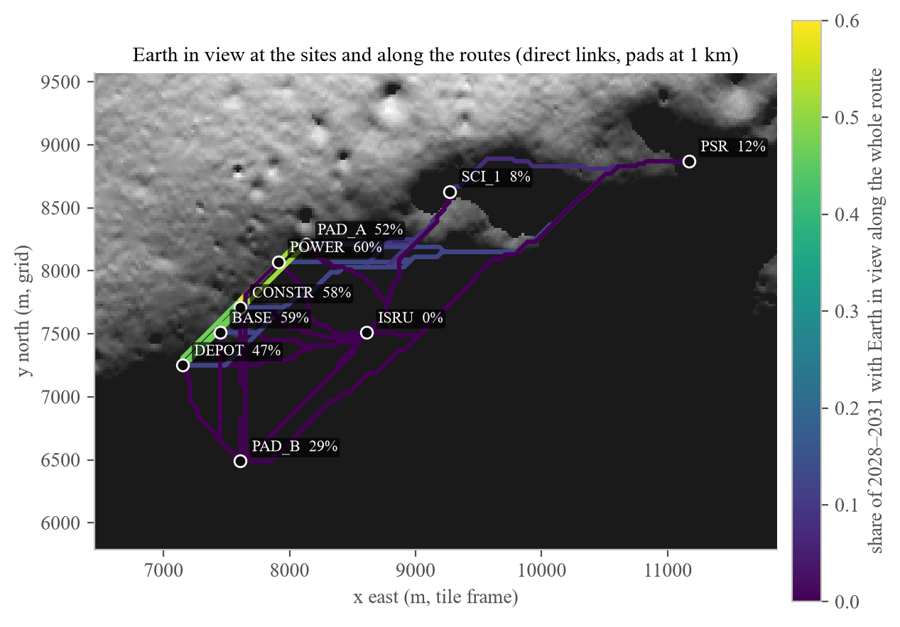
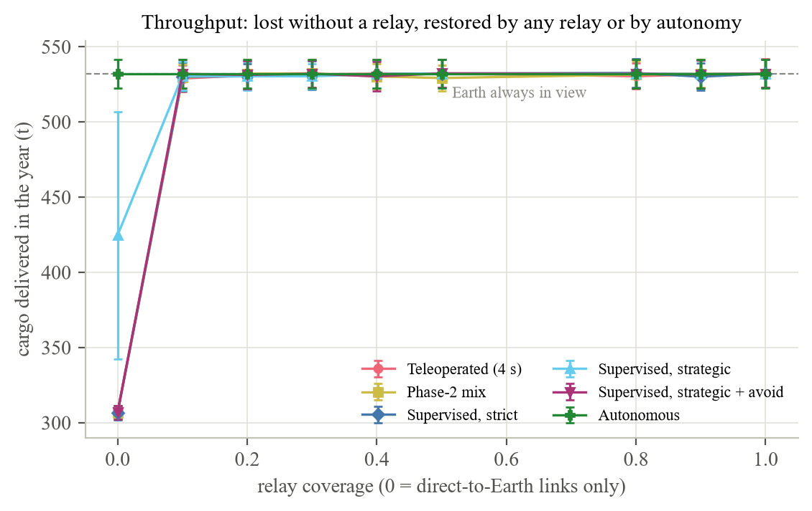
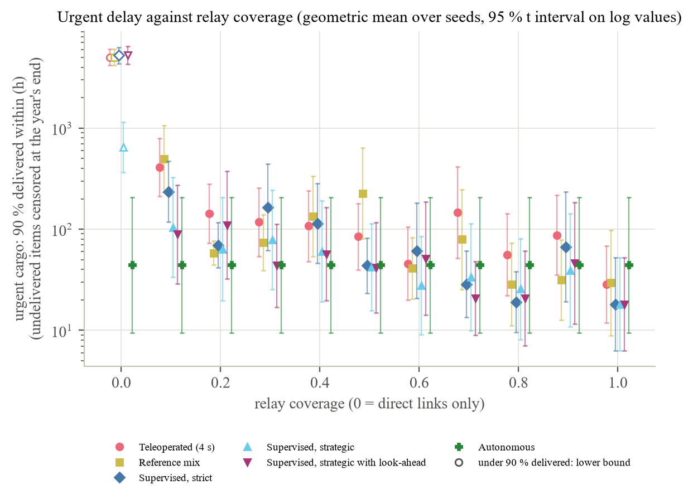
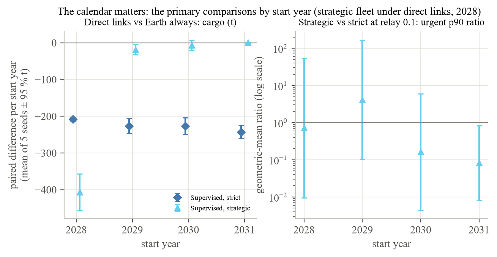
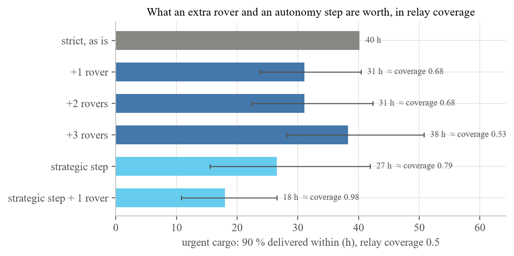
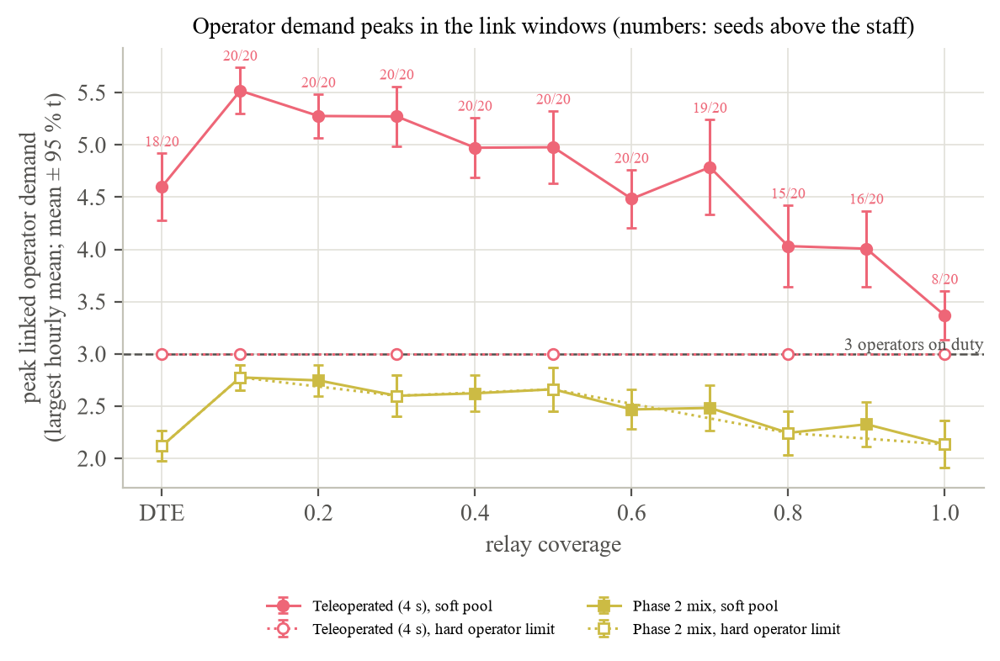

Abstract. At the lunar south pole, Earth stays within 7° of the horizon and terrain often hides it. Rovers driven or supervised from Earth need a direct-to-Earth (DTE) link, and we found no published estimate of what its gaps cost a cargo fleet. From SPICE ephemerides and LOLA terrain we computed Earth-link windows for 2028–2031 at 7 sites, 10 pads and 182 routes of a Connecting Ridge base; the oxygen plant never sees Earth. We simulated 5,540 cargo years under DTE only and ten relay coverages. With DTE only, supervised rovers that drive only when linked deliver 307 t a year against 532 t (42 % less), mostly regolith assumed hauled to the plant; lander cargo falls 68 % and 43 % of urgent items arrive within the year. For this lightly used fleet, a relay assumed to see all routes restores 99 % of the loss at coverage 0.1; rovers and a mast restore none. In exploratory stages, rovers driving between interventions without a link come within 5 % of always-linked tonnage if any rover held over a week gets help (helper's time not modelled), but deliver 42 t if no help comes. At coverage 0.5 one extra rover is worth 0.12 [0.01, 0.42] of coverage in urgent delay (not significant by the paired test; fixed night share), pricing 0.1 of coverage at 38 M$ (11 to over 200 M$) a year. Under DTE, teleoperation exceeds its operator staff at peak in 18 of 20 seeds (soft pool).
Keywords: lunar south pole, direct-to-Earth communication, Earth visibility, horizon mask, lunar relay, LCRNS, teleoperation, supervised autonomy, rover fleet, surface logistics, discrete-event simulation, LOLA, SPICE
A base at the lunar south pole sees Earth low on the horizon. Over a month Earth wanders about ±6.9° in latitude and ±8.2° in longitude in the lunar sky, an effect of libration, the Moon's apparent rocking as seen from Earth [1]. De Rosa and colleagues put Earth's centre within about ±6.5° of elevation and ±8° of azimuth as seen from polar sites [2]. At our base on the Connecting Ridge, Earth's centre moved between −7.54° and +6.23° of elevation over 2028–2031, inside a wedge of azimuth 16° wide (Section 3.2). Its apparent disc is about 2° across. For about two weeks of every month it is below the horizon [3, 4]. Terrain lengthens the gaps. A site below a ridge, or on a slope facing away from Earth, loses Earth earlier and regains it later, and some sites never see it at all.
This matters because of how surface rovers are expected to be driven. In NASA's trials with a Lunar Terrain Vehicle (LTV), operators on Earth drove a simulated rover at communication delays of 0, 4, 6 and 8 s, and the tests assumed “continuous high-bandwidth communication between the LTV and the remote operator” [5]. A teleoperated rover needs the link for every command. A supervised rover drives itself between approvals, but it stops at a hazard it cannot resolve, and an operator on Earth has to answer before it moves on. VIPER's planners treated the line of sight to the ground stations as a moving “radio shadow” and timed traverses so as not to be caught by it [6]. Otten, Wettergreen and Whittaker showed that requiring continuous Earth contact while driving forces a polar rover to “dwell motionless near the day–night terminator for weeks”, and proposed short, preplanned autonomous drives without communication [7]. De Rosa and colleagues concluded that windows of about 14 days “demand a relatively high level of autonomy” [2]. For Artemis III, NASA required direct communication with Earth assuming no relay is available, and screened out areas where Earth is visible less than 25 % of the time [8]; its 2026 site update prefers regions with greater Earth visibility if the mission uses a DTE architecture [9].
There are four ways to buy the link back. The first is a relay in lunar orbit. NASA's Lunar Communications Relay and Navigation Systems (LCRNS) project states its case as coverage: DTE alone gives 17–43 % yearly coverage at candidate south-pole sites, DTE plus one relay 80–86 %, and DTE plus two relays 100 % [10]. The relay services contract has a maximum potential value of 4,820 M$ [11]. The second is more autonomy, which is Otten's answer [7]. The third is more rovers, which add capacity but wait for the same link. The fourth is a mast at the base that sees Earth and relays to rovers within its line of sight; NASA Glenn's surface relay concept uses a 10 m boom and expects coverage “out to 10 km, depending on local terrain” [3]. Each costs money, and terrain limits each in a different way.
Part of this is known. Earth-visibility fractions at named polar sites have been computed from radar and laser terrain [1, 2, 12]. Windows of about 14 days are published [2]. Relay coverage is published [10]. Traverse planning for a single rover around link gaps is published [6, 7, 13]. In about 35 searches and 25 full-text reads in October 2026 (Section 2.5) we did not find a model that takes terrain-masked link windows along real routes and asks what they do to a fleet that has to move cargo: how much it delivers, how late urgent items arrive, and which of the four fixes buys the most. Nor did we find a public price for relay service per hour or per year (Section 2.2). A break-even therefore has to be stated as an equivalence between options rather than as a price in dollars.
Our previous paper [14] built a discrete-event simulation of cargo movement at a south-pole base, that is, a simulation that jumps from one event, such as a landing or the end of a drive, to the next. It runs on NASA's 5 m terrain of the Connecting Ridge from the Lunar Orbiter Laser Altimeter (LOLA), with rover routes and driving tables by autonomy level, and it priced landing precision, pad standoff, a plume keep-out and rover autonomy. Like the LTV trials, it assumed that the link to Earth is always there. At our layout that assumption does not hold. A rover antenna 2.5 m above the base sees Earth 59 % of the time, but the oxygen pilot plant, 1.2 km from the base and 139 m below it, never does, and 101 of the 182 routes between our sites and pads are never in view of Earth from end to end (Section 3.5). This paper asks what that costs and what fixes it, for this one base. We ask four questions, numbered for this paper:
We answer RQ1 with data and RQ2–RQ4 with simulation. Earth's direction comes from SPICE, NASA's toolkit for planetary geometry, every 10 minutes for four years. Horizon masks in Earth's direction come from the 5 m terrain tile out to 8 km and from NASA's 80 m polar terrain out to 300 km. The link windows enter the simulation of [14] as a rule that is off unless a scenario sets it. A teleoperated rover drives only while its whole route is in view. A supervised rover either does the same or, under a second policy, drives without a link and waits only when it needs an intervention. An autonomous rover is not affected, and a relay or a mast adds link time. The experiment crosses the link regime with the autonomy mix (Stage A) and repeats part of it with a hard limit on operators (Stage A2). It adds rovers, a mast and supervised policies (Stage B); varies pad standoff, the link criterion and the deferral rule (Stage C); replaces the fixed night share with the real Sun (Stage D); and tests the relay's gap pattern, the intervention rate, the plume keep-out and the feedstock assumption (Stage E). Every cell runs 20 seeds with common random numbers (Section 4.3). Our contributions are:
We do not claim a radio link budget. Our criteria are geometric: any part of Earth's disc above the terrain horizon, or its centre 0.5° or 2° above it. We model no diffraction, no loss when terrain intrudes into the Fresnel zone (the region around the line of sight that carries most of the signal's power) near grazing, and no scheduling of ground stations. The relay is a parametric on–off process with a stated coverage and gap pattern, taken to see every route point; we did not propagate the LCRNS orbits or mask them by terrain. Crewed periods, when astronauts at the base could drive rovers locally, are not modelled. Supervised intervention rates come from the hazard model of [14], which is our assumption; no measured interventions-per-kilometre figure exists for any lunar rover. The relay price we report is the price at which a relay equals extra rovers in our model, not a market price. Stages A–C keep the fixed night share of [14]; only Stage D uses the real Sun. The reference fleet is lightly used, so the results say little about a busy fleet. One site, one terrain tile and one base layout are simulated.
Section 2 reviews Earth visibility at polar sites, relay architectures, operations around link gaps and surface logistics simulation, and states the gap. Section 3 describes the data and the model: the site and routes, the ephemeris, the horizon masks, the link criteria, the windows per site and per leg, the comparison with the published map, and the engine's link rules. Section 4 describes the experiment. Section 5 reports the results, Section 6 discusses them, Section 7 gives the limitations and Section 8 the conclusions. Appendix A gives the details of the map comparison and Appendix B a glossary of terms.
Bryant computed horizon masks for the area within 100 km of the south pole from a Goldstone radar elevation model and integrated them over Earth's monthly motion, averaging over 2009–2028 [1]. His best base site had 92 % solar and 51 % DTE availability. At B1, a peak on the ridge between Shackleton and de Gerlache, any part of Earth was visible 65.2 % of the time, half the disc 58.2 % and the whole disc 51.3 %; sites on the Shackleton rim reached 62–64 %, and Malapert and Leibnitz β 100 % [1]. He wrote that “the best visibility to some part of the Earth is around 65 percent” and that “continuous polar lunar base coverage requires some kind of Earth relay”, and suggested a radio reflector on Malapert. He gave fractions, not outage durations. B1 lies about 1.5 km from our base, but his grid comes from a different elevation model, so the match is approximate.
De Rosa and colleagues characterised landing regions for ESA's Lunar Lander with LOLA terrain, JPL Horizons ephemerides and horizons out to 150 km at 720 azimuths [2]. Earth's centre followed “a pattern of approximately ±6.5° in elevation every month, constrained to approximately ±8° in azimuth”, and DTE windows followed “a regular pattern of ~14 days”, up to about 19 days near 85°S. Their region CR1 on the Connecting Ridge lies 0.9 km from our base, by our computation from their published coordinates. At none of their regions did terrain toward Earth cause “a significant decrease” in visibility, and a 2° minimum elevation cost at most 5 % of availability. Their operational conclusion, that the windows “demand a relatively high level of autonomy”, is the starting point of this paper.
The LOLA team publishes average Earth-visibility maps through NASA Goddard's Planetary Geodesy Data Archive (PGDA), computed with the method of Mazarico and colleagues [12]. Each pixel holds the share of time steps in which “any part of [Earth's] disc is not obscured”, at 240, 120 and 60 m for the south polar region. The product page describes the maps as averages over hourly time steps spanning 18.6 years and notes that the criterion “may be very slightly optimistic for radio link studies” [12]. These maps are the natural check for any new computation, and we use the 60 m map in Section 3.6. They are surface-level averages: they carry no antenna height, no windows and no time series. Gläser and colleagues computed illumination on the Connecting Ridge from LOLA terrain, 92.27 % at 2 m above the ground and 95.65 % at 10 m, with continuous darkness of typically only 3–5 days [15]; their abstracts give no Earth figures.
Earth visibility has also entered site selection. A multi-criteria evaluation of Artemis III candidate sites scored DTE from the 240 m maps; its best point keeps direct communication with Earth about one third of the time, and the Connecting Ridge is not in its top 20 [16]. Wang and colleagues studied terrain-driven Earth visibility for Earth observation from the Moon and report that terrain cuts visibility by up to 80 % on crater rims and at high latitude, so that a smooth-sphere approximation fails there [17]; we read only their abstract. NASA screened Artemis III landing areas with Earth visibility below 25 % [8], and its 2026 update evaluates constraints on a calendar basis and prefers regions with greater Earth visibility under a DTE architecture [9]. None of these studies gives windows along rover routes, and none relates the timing of windows to surface operations.
NASA's answer to the polar link problem is the LCRNS relay service. The contract was awarded to Intuitive Machines in September 2024 under NASA's Near Space Network. It is a firm-fixed-price, indefinite-delivery contract with a maximum potential value of 4,820 M$, an ordering period to 2029 and an option to 2034, for relays serving “the Moon's South Pole region” [11]. Its Reference Constellation 3.1 has five satellites in elliptical lunar frozen orbits, that is, orbits whose shape and orientation stay nearly fixed, with apolune (the point farthest from the Moon) over the south pole. The orbits have a semi-major axis of 11,305–11,326 km, an eccentricity of 0.692 and a period of about 30 h [18]. Esper and colleagues report yearly coverage at candidate sites of 17–43 % for DTE alone, 80–86 % for DTE and one relay, and 100 % for DTE and two relays [10]. In the early single-satellite design, Design Reference Mission 0 (DRM-0), one satellite in a 784-minute orbit covered the south pole for 324 of every 784 minutes, about 41 % [10]. This is the only per-pass figure we found, and our relay model takes its 460-minute gap (Section 3.7). The DTE figures of [10] come from a ten-year line-of-sight simulation to Earth's centre; the worst case is named “Spudis Ridge Peak” and the best “Mount Malapert Peak”. Malapert at 43 % does not match Bryant's 100 % [1], so the LCRNS figure probably includes constraints that the part of the paper we read does not state. In a 2024 plan the service was to reach one augmented forward signal over the south pole from September 2026, two by mid-2028 and four by September 2029 [19]. The first satellite of the commercial relay network, Altus-1, is to launch with Intuitive Machines' IM-3 lander [20]; we found no firm launch date. Because the relay's apolune is about 19,150 km from the Moon's centre, a hop through it adds at most about 0.065 s one way, small against the 5.0 s round trip of our engine (computed from [18]). A relay therefore changes how often a rover can be driven, not how fast.
Europe is building two systems. ESA's Lunar Pathfinder is a single relay in an elliptical lunar frozen orbit giving long daily visibility of the southern hemisphere [21]. ESA's Moonlight programme plans five satellites, one for communications and four for navigation, placed to prioritise coverage of the south pole, with initial service by the end of 2028 and full service by 2030 [22]. We found no hours-per-day figure for either at the south pole.
Surface relays are the cheaper end. NASA Glenn's Lunar Surface Relay concept puts a terminal on a 10 m boom. It gives coverage under the mobile-telephony standards of 3GPP (the 3rd Generation Partnership Project) “out to 10 km, depending on local terrain” and Wi-Fi to about 300 m, and imagines mobile versions driven by waypoints [3]. The same paper notes that when Earth is not visible from the south pole, “nominally for 14 days every month”, orbital relays provide service. It lists NASA's 18 m-class Lunar Exploration Ground Sites (LEGS) at White Sands, Matjiesfontein and Canberra as the Earth end of DTE links [3]. Jun and colleagues at JPL propose a single static surface station on the Connecting Ridge that relays between orbiters and nearby surface users [4]. They argue that a small autonomous rover “would benefit significantly” from a surface link under 10 km rather than a link of more than 8,000 km to an orbiter, and put the cost of a complete constellation at “many billions in USD over decades” [4]. We found no public price per relay hour or per link. That is why we state relay value as an equivalence in rovers (Section 4.4).
VIPER's mission planning is the closest prior work [6]. Its planners wrote that “similar radio shadows are cast from a line-of-site radio link to ground stations”, that “Sun and radio shadows move at speeds similar to VIPER's average speed” and that “traverses must be timed to avoid moving shadows”. DTE was one of four site-selection requirements; “safe havens” were places with at most 50 h of shadow while Earth is below the horizon; and traverse planning was posed as a cost-constrained travelling-salesman problem whose budget was the time Earth is above the horizon at the site. Monte Carlo stress tests counted shadow and dropout events, and their hours, on the links to NASA's Deep Space Network (DSN). VIPER was to operate with 6–10 s of latency, around the clock, with Earth out of view two weeks a month [23]. This is one science rover visiting stations. It has no fleet, no cargo and no trade between a relay and autonomy.
Otten, Wettergreen and Whittaker argue the autonomy side [7]. Requiring continuous Earth communication while driving forces a sun-synchronous polar rover to wait near the terminator for weeks, and blackouts are “common at local depressions and on non-Earth-facing slopes” and “not conducive to highly supervised autonomy or teleoperation”. Their remedy, “strategic autonomy”, lets the rover make “preplanned, short, slow, autonomous drives without communication”. The metric is mission duration and risk for one rover; cost does not enter. Inoue and Adachi plan spatio-temporal paths for a polar rover under time-varying illumination and Earth visibility, with allowance for schedule delay [13]; again one rover. On Mars, Gaines and colleagues found that rover productivity is shaped by the timing of relay passes, and that non-sun-synchronous relay orbiters could make this worse [24]. The teleoperation evidence for the Lunar Terrain Vehicle, by contrast, assumes the link. NASA's latency trials assumed “continuous high-bandwidth communication between the LTV and the remote operator”, and the vehicle's requirement of 6 km (threshold) or 8 km (goal) in one 24-hour period applies “when operated remotely” [5].
Campaign logistics models such as SpaceNet, the generalised multi-commodity network flow and time-expanded networks optimise flows between Earth, orbit and the lunar surface and treat the surface as one node [25–27]; a 2024 review of space logistics lists surface vehicle routing among the topics it does not cover [28]. Base-level agent-based and discrete-event models have rovers but no communication windows. A benchmark of a lunar base built in Mesa, a Python library for agent-based models, runs four astronauts and two rovers [29], and an agent-based Mars base simulation resolves landing slots by message passing among 93 agents [30]. Work on autonomous multi-rover cargo transport, including a 2026 field test under a 5 s each-way delay, does not model communication windows [31, 32]. Our earlier simulation [14, 33] is a discrete-event model of cargo movement at a south-pole base with several owners, four dispatch rules, terrain routes and autonomy levels. Its only communication effect is latency: teleoperated speed falls with round-trip delay, and each intervention costs a round trip plus recovery time. The link itself is always there.
We searched in October 2026, about 35 web searches and about 25 full-text reads, across NTRS records and PDFs, arXiv, J-STAGE, publisher pages and NASA and ESA programme pages. We searched for combinations of Earth visibility, DTE, relay, blackout or radio shadow with rover, teleoperation, autonomy, fleet, logistics, throughput, delay and simulation, and followed the reference lists of the closest papers. ScienceDirect and IEEE paywalls limited what we could read; the Earth-visibility study of Wang and colleagues [17] and the illumination study of Gläser and colleagues [15] were read as abstracts only. Within those limits we found the following. Site fractions, relay coverage and single-rover planning around link gaps are published (Table 1). No published model takes terrain-masked link windows along real routes to the availability of a teleoperated or supervised fleet, and from there to cargo throughput and delay. No study states a break-even between relay coverage, an autonomy upgrade, extra rovers and a surface mast. Our confidence that this coupling is new is medium: the residual risk is a 2025–2026 paper in a venue we could not search.
Table 1. What the closest prior work models. A tick means the work models the feature; a dash means it does not; “partly” is explained in the text. “Windows” means a time series of link states, not only a long-run fraction.
| Work | Terrain-masked Earth visibility | Windows in time | Along rover routes | Relay coverage | Autonomy levels | Fleet and cargo outputs | Break-even between fixes |
|---|---|---|---|---|---|---|---|
| Bryant 2009 [1] | ✓ | – | – | argued, not modelled | – | – | – |
| De Rosa et al. 2012 [2] | ✓ | ✓ (window lengths) | – | – | argued, not modelled | – | – |
| LOLA visibility maps [12] | ✓ | – | – | – | – | – | – |
| Site selection [8, 9, 16] | ✓ | partly (calendar) | – | – | – | – | – |
| LCRNS [10, 18] | line of sight to Earth's centre | partly (yearly averages reported) | – | ✓ | – | – | – |
| Surface relays [3, 4] | – | – | – | ✓ (surface station) | – | – | – |
| VIPER planning [6] | ✓ | ✓ | ✓ (one rover) | – | – | – | – |
| Otten et al. 2017 [7] | ✓ | ✓ | ✓ (one rover) | – | ✓ | – | – |
| Inoue and Adachi 2021 [13] | ✓ | ✓ | ✓ (one rover) | – | – | – | – |
| Campaign and base models [25–30] | – | – | – | – | – | partly | – |
| Our earlier simulation [14, 33] | – | – | – | – | ✓ (latency only) | ✓ | – |
| This paper | ✓ | ✓ | ✓ (182 legs) | ✓ (parametric) | ✓ | ✓ | ✓ |
This section describes how we computed the link windows (3.1–3.5), how we compared them with the published map (3.6, with details in Appendix A), and how the simulation uses them (3.7). Every physical number carries a flag at first appearance, as in [14]: Measured (flight, laboratory or survey data), Spec (a published design value or requirement), Modelled (produced by a model, including ours) or Assumed (our choice, swept where it matters). Link fractions and windows are Modelled: we computed them from measured terrain and a fitted ephemeris. Appendix B defines the technical terms.
The base (BASE) is the one of our previous paper [14], at the flattest high point of NASA Goddard's 5 m LOLA terrain tile of the Connecting Ridge between Shackleton and de Gerlache craters (Site01, 16 × 16 km, Measured) [34]: 89.439°S, 222.761°E, 1,957.6 m above the 1,737.4 km reference sphere. Six work sites lie 0.26–3.96 km away: a cargo depot (DEPOT), a power plant (POWER), a construction site (CONSTR), an oxygen pilot plant (ISRU, for in-situ resource utilisation), a science site (SCI_1) and a permanently shadowed crater (PSR). Two pads, A and B (PAD_A and PAD_B in the tables), sit at each of five standoffs, 0.5, 1, 2, 3 and 5 km; Table 2 of [14] gives the placement rule and every coordinate. ESA's candidate landing region CR1 [2] is 0.9 km from our base.
With seven sites and ten pads there are 182 directed legs: 42 between sites and 140 between a site and a pad. For each leg we take the slope-only route of the driving model of [14], a shortest-path (A*) search on slope that is also its night route. We sample the route every 100 m and snap the samples to the centres of 20 m posts, so routes that share a corridor share cells: 2,404 route cells in all. A leg's end points are the site positions. The two directions of a leg are kept apart, because ties in the search can give different routes: BASE→DEPOT is linked 43.1 % of the time and DEPOT→BASE 46.7 % (any part of the disc, Section 3.4). The engine's driving tables use routes that depend on the lighting case [14]; the link file uses the slope-only route for every lighting case (Assumed).
Earth's direction comes from NAIF's SPICE toolkit [35] through SpiceyPy [36], with the generic kernels de440s.bsp [37], moon_pa_de440_200625.bpc, moon_de440_250416.tf, pck00011.tpc and naif0012.tls. We work in the Moon's mean-Earth frame, which these kernels realise as MOON_ME_DE440_ME421, the DE421 mean-Earth frame in which the LOLA products are given [38]. For BASE, the SPICE routine azlcpo gives Earth's azimuth, elevation and range with light-time and stellar-aberration corrections, the apparent direction for an observer with no atmosphere. We compute it every 10 minutes from 2028-01-01 00:00 to 2031-12-31 23:50 UTC (210,384 epochs).
For every other point we translate BASE's Earth vector by the point's offset and compute azimuth and elevation in the point's own local frame; against azlcpo run for each point, the largest difference over 2,169 test epochs is 6 × 10−14 degrees. Earth's apparent radius is the arcsine of 6,378.1366 km (the equatorial radius of pck00011, Spec) over the range. The grid bearing of a direction is its local azimuth plus the point's east longitude, because the polar stereographic projection of the terrain preserves angles. Over 2028–2031 Earth's grid bearing at BASE spans −8.05° to +8.03° and its elevation −7.54° to +6.23° (Modelled).
A check against JPL Horizons [39] for one month at BASE (January 2028 at 10-minute steps, 4,465 epochs, airless apparent quantities, Earth from DE441) gives largest differences of 1.0 × 10−6 degrees in azimuth, 5.5 × 10−7 degrees in elevation and 0.0006 arcseconds in Earth's apparent diameter, far below the 0.1° step of our horizon masks.
Earth stays in a wedge 16° wide, so we compute the terrain horizon only there: grid bearings within 12° of the middle of Earth's range at BASE, in 0.1° steps. For each point and bearing the horizon is the largest elevation angle of the terrain along a straight map ray, computed exactly on the 1,737.4 km sphere so that the Moon's curvature is included. Out to 8 km the terrain is the floating-point 5 m tile [34]. From 8 to 300 km it is the 80 m polar model LDEM_80S_80MPP_ADJ, product 90 of NASA Goddard's Planetary Geodesy Data Archive (PGDA; Measured) [38], read in a window of 1,763 × 3,954 posts toward Earth. Terrain beyond its 80°S edge, 303 km from the pole, is not included. Where the two models overlap they differ by −0.01 m on average, with an RMS of 1.24 m over 361 posts.
The far field matters for a high site. BASE is 1.96 km above the reference sphere, so its smooth-sphere horizon dips 2.7° below the horizontal, and a feature 3 km above BASE stays above that dip out to about 210 km (Modelled). Antennas are 2.5 m above the ground for a rover at sites, pads and route samples (Assumed; about the height of the mast of NASA's VIPER rover, whose tip stands about 2.5 m above its wheel rims [40]). The mast at BASE is 10 m high (Assumed; the 10 m boom of NASA Glenn's surface relay concept [3]). Antenna height matters on a crest: at BASE the link fraction is 0.384 at the surface and 0.593 at 2.5 m (Section 3.6). It does not matter at the oxygen plant, which sees no Earth at the surface, at 2.5 m or on the published map. Unit tests check the geometry against known answers: the analytic dip on a smooth sphere, the exact elevation of a wall, and windows at the analytic crossings for a sinusoidal Earth, with link fractions correct to 2 × 10−3.
A point is linked at an epoch when Earth's disc clears the terrain horizon h at Earth's grid bearing. Under the criterion any part of the disc, the upper limb is above h (elevation plus apparent radius > h); this is the criterion of the LOLA visibility maps [12]. Under centre 0.5° above the horizon and centre 2° above the horizon, Earth's centre is at least 0.5° or 2° above h; 2° is De Rosa and colleagues' minimum elevation [2]. Earth's apparent radius is 0.9–1.0°, so the criteria sit about 1.5° and 3° of elevation apart.
The criteria are geometric. A ground station can sit anywhere on Earth's visible disc, up to about 1° from its centre. Near grazing, a radio link also loses power when terrain enters the first Fresnel zone, the region around the line of sight that carries most of the signal. At X-band, the 8.4 GHz band of deep-space links (wavelength 3.6 cm, Assumed), that zone has a radius of about 6 m at 1 km past an obstacle and 19 m at 10 km (Modelled, √(λd)). Centre 0.5° above the horizon clears that zone around the line to Earth's centre for obstacles more than about 0.5 km away, and centre 2° above it keeps even a station on Earth's limb about 1° clear of the terrain. We therefore expect a real link to fall between the any-part and the centre criteria, but we compute no link budget, and multipath off terrain at 0–6° elevation could make a real link worse than either. The main stages use any part of the disc; Stage C tests the other two.
In mode DTE only a point is linked when Earth is in view of its own antenna. In mode DTE plus mast it is also linked through the mast. That needs two things at once: the point's antenna has line of sight to the top of the 10 m mast at BASE within 10 km, and the mast sees Earth by the same criterion. Line of sight is computed on the 5 m tile with the Moon's curvature, as in [14]; the 10 km range is Assumed after [3]. A leg is linked only when every sample on its route is linked, because a teleoperated drive needs the link from start to end. The rule is strict: one blind cell darkens a whole leg.
Windows are stored run-length encoded per point, leg, criterion and mode at 10-minute resolution, in a 383 KB file that also holds the checksum of every kernel and terrain file and the checks of Sections 3.2 and 3.6 (Availability). A 490 KB companion file holds hourly windows for every route sample, an hour counting as linked only if all six of its 10-minute epochs are; the engine uses it to place supervised interventions (Section 3.7). Each stage of the pipeline ran in one process in 2–366 s with at most 281 MB of memory.
Table 2 gives every site and pad. A rover antenna at BASE sees some part of Earth 59.3 % of the time, in windows of 16.0 days on average separated by gaps of 264 h on average and 296 h at most. Under the centre criteria the fraction is 52.1 % and 44.7 % and the mean window 14.1 and 12.1 days. Window length tracks the link fraction times the 27.2-day period of Earth's elevation cycle, so the ~14 days of De Rosa and colleagues [2] corresponds to a site linked about half the time. The year matters: averaged hourly over 18.6 years, BASE is linked 58.0 % of the time, and single years range from 54.6 % to 62.6 % (Modelled). This is why the experiment rotates the start year (Section 4.3).
Three sites are poor. The oxygen pilot plant never sees Earth. The science site sees some part of Earth 8.5 % of the time and never under the centre criteria. Its 42 windows last about three days each (71 h on average) and sit near the monthly maxima of Earth's elevation, when Earth's centre is at least 5° above the horizontal. It has no window from January to late November 2028: the first opens on 26 November 2028, day 330 of the series. The 7,929 h in Table 2 is that stretch, cut off at the start of the series; after it, the largest gap between two windows is 623 h, about 26 days. The shadowed crater sees part of Earth 12.3 % of the time and never its centre, in 54 windows of 80 h on average, one near each monthly maximum through the whole series. Shadowed ground can see Earth because Earth's centre rises to about 6° above the horizontal each month (Section 3.2) while the Sun stays low. The lunar equator is tilted 1.54° to the ecliptic, so the Sun's centre stays within 1.6° of the horizontal at the pole and within 2.1° at BASE (Modelled from the DE440 lunar orientation with SPICE [35, 37]).
The pads vary as much. At 0.5 km pad A is linked 59.6 % of the time and pad B 52.5 %; at 1 km, the standoff of the main stages, 51.8 % and 28.6 %. At 2 km pad A is linked only 8.0 % of the time: its first window opens on 24 December 2028 and the next on 11 April 2029, 2,579 h later, after which it is linked about three days a month. At 3 and 5 km all four pads are below 36 %, and pad B at 3 km has no window until 8 May 2029.
A 10 m mast at BASE is itself linked 59.7 % of the time. It lifts the depot, the power and construction sites, both pads at 0.5 km and pad A at 1 km to its own 59.7 %. It has no line of sight to the oxygen plant, the science site, the shadowed crater, pad B at 1 km or any pad at 2 km or more, and leaves them as they were.
Table 2. Earth-link fractions at the sites and pads, 2028–2031, 10-minute epochs, rover antenna 2.5 m above the ground (Modelled from SPICE ephemerides and LOLA terrain). Mean and largest gap are taken over all unlinked stretches, including those before the first and after the last window, which are cut off at the ends of the series. “Never” means no link in the four years. Distances to the base are from [14]. The last column adds a 10 m mast at BASE with a 10 km range; the mast itself is linked 0.597 (any part of the disc), 0.525 and 0.450 of the time. a The stretch from 1 January 2028 to the first window, cut off at the start of the series. Between windows, the mean and largest gaps are 582 and 623 h at SCI_1, 631 and 2,579 h at pad A at 2 km, and 580 and 634 h at pad B at 3 km.
| Point | Distance to base (km) | Any part: fraction | Mean gap (h) | Largest gap (h) | Mean window (d) | Centre 0.5° above | Centre 2° above | Any part, with mast |
|---|---|---|---|---|---|---|---|---|
| BASE | – | 0.593 | 264 | 296 | 16.0 | 0.521 | 0.447 | 0.597 |
| CONSTR | 0.26 | 0.578 | 274 | 304 | 15.6 | 0.507 | 0.434 | 0.597 |
| DEPOT | 0.40 | 0.470 | 344 | 380 | 12.7 | 0.397 | 0.312 | 0.597 |
| POWER | 0.73 | 0.596 | 262 | 292 | 16.1 | 0.524 | 0.449 | 0.597 |
| ISRU | 1.16 | 0.000 | never | never | – | 0.000 | 0.000 | 0.000 |
| SCI_1 | 2.14 | 0.085 | 746 | 7,929a | 2.9 | 0.000 | 0.000 | 0.085 |
| PSR | 3.96 | 0.123 | 559 | 602 | 3.3 | 0.000 | 0.000 | 0.123 |
| PAD_A at 0.5 km | 0.48 | 0.596 | 262 | 292 | 16.1 | 0.524 | 0.450 | 0.597 |
| PAD_B at 0.5 km | 0.48 | 0.525 | 309 | 342 | 14.2 | 0.454 | 0.377 | 0.597 |
| PAD_A at 1 km | 0.98 | 0.518 | 313 | 345 | 14.0 | 0.448 | 0.372 | 0.597 |
| PAD_B at 1 km | 1.03 | 0.286 | 455 | 492 | 7.7 | 0.177 | 0.000 | 0.286 |
| PAD_A at 2 km | 2.10 | 0.080 | 827 | 8,595a | 3.1 | 0.000 | 0.000 | 0.080 |
| PAD_B at 2 km | 2.07 | 0.488 | 332 | 369 | 13.2 | 0.414 | 0.330 | 0.488 |
| PAD_A at 3 km | 2.91 | 0.249 | 479 | 516 | 6.7 | 0.112 | 0.000 | 0.249 |
| PAD_B at 3 km | 3.04 | 0.076 | 876 | 11,837a | 3.1 | 0.000 | 0.000 | 0.076 |
| PAD_A at 5 km | 4.94 | 0.354 | 412 | 451 | 9.6 | 0.268 | 0.138 | 0.354 |
| PAD_B at 5 km | 4.99 | 0.251 | 478 | 516 | 6.8 | 0.112 | 0.000 | 0.251 |
Legs are worse than their end points, because a route can pass behind terrain between two linked sites. Of the 182 legs, 101 are never linked from end to end under the any-part criterion and 138 under either centre criterion. Of the 42 legs between sites, 13 are never linked: the twelve legs to or from the oxygen plant, and PSR→POWER (POWER→PSR is linked 12.3 % of the time). BASE→DEPOT, 408 m between sites linked 59 % and 47 % of the time, is linked 43.1 %. Every leg that touches the science site or the crater is linked at most 12.3 % of the time, and never under the centre criteria. Of the 56 pad legs at 3 and 5 km, 55 are never linked; the exception, from the crater to pad A at 5 km, is linked 8.0 % of the time (Table 3). In the network of the main stages, the seven sites and the two pads at 1 km (70 legs), 28 legs are never linked under the any-part criterion and 50 under the centre criteria, and the mean leg is linked 17.4 % of the time, 19.5 % with the mast (Modelled).
Table 3. Legs between a site and a pad, grouped by standoff: mean link fraction over the 28 legs of each standoff (seven sites, two pads, two directions), and in brackets the number of legs never linked from end to end in 2028–2031 (Modelled).
| Standoff (km) | Any part | Centre 0.5° above | Centre 2° above | Any part, with mast |
|---|---|---|---|---|
| 0.5 | 0.334 (4 of 28) | 0.263 (12) | 0.219 (12) | 0.371 (4) |
| 1 | 0.156 (15) | 0.119 (20) | 0.096 (20) | 0.171 (15) |
| 2 | 0.129 (14) | 0.088 (20) | 0.051 (20) | 0.129 (14) |
| 3 | 0.000 (28) | 0.000 (28) | 0.000 (28) | 0.000 (28) |
| 5 | 0.003 (27) | 0.000 (28) | 0.000 (28) | 0.003 (27) |
The LOLA team's 60 m map gives, for each pixel, the share of time steps in which any part of Earth's disc is visible from the surface [12, 41]. At BASE it gives 0.503; our rover antenna on the 5 m tile gives 0.593. Before comparing we had set a tolerance of ±0.05 for differences of criterion and epoch. Because the two numbers answer different questions, we also ran our pipeline the map's way: antenna at the surface, the 5 m tile averaged to the map's 60 m pixels, and the horizon computed at each pixel centre. That gives 0.471 at BASE, 0.032 below the map and inside the tolerance. Over all 17 points the map's way differs from the map by 0.028 on average in absolute value (signed mean −0.004). The largest difference is −0.123, at pad A at 3 km; 15 points are within 0.05, and at two, the oxygen plant and the science site, both values are zero. Appendix A gives every point, the two outliers, the map's registration and its epoch.
The larger difference, 0.593 against 0.503, is the antenna. BASE is a ridge crest. At 0 m on the 5 m tile, relief within a few metres of the point raises the horizon toward Earth to +2.9°, and the fraction is 0.384. At 2.5 m the antenna clears that relief, the horizon at Earth's mean bearing drops to −1.26°, set by terrain beyond 8 km, and the fraction is 0.593; a 10 m mast gets 0.597. The 60 m map smooths the metre-scale relief and falls between the two. At 16 of our 17 points the 2.5 m antenna sees Earth at least as often as the map's way, by up to 0.25 (pad A at 3 km); at the other, pad A at 5 km, it sees it 0.007 less often. At our crest points, then, a surface-level map understates what a rover antenna sees, and the height of the antenna matters more than the resolution of the map.
LunarHaul is the discrete-event simulation of [33] with the terrain, driving and landing models of [14], where it is described in full. A run covers one year (8,760 h). Cargo moves between the seven sites and the two pads of the chosen standoff. Landers arrive as Poisson processes, bulk regolith flows add recurring lots, and a fleet owned by several companies moves the items. Jobs are assigned by the pooled dispatch auction of [33], in which the free vehicles of every owner bid for the waiting jobs. Each leg's time, energy and intervention count are drawn from the driving tables of [14]. An intervention costs the round trip (5.0 s by default: 2.6 s of light time and 2.4 s of ground processing) plus 300 s of recovery (Assumed in [14]). A shared pool of Earth operators gives a teleoperated vehicle one operator, a supervised vehicle a quarter of one and an autonomous vehicle 0.05 (Assumed in [33]). The night is a 708.7 h cycle with a dark fraction of 0.15 that starts at hour 0 of every run, whatever the start year. Its overlap with Earth's windows is therefore arbitrary and differs between start years; Stage D replaces it with the real Sun (Section 4.2). Demand and operations draw from separate seeded streams, so every variant of a cell meets the same landings, manifests and faults for a given seed (common random numbers).
The link rule is a new optional scenario field. When it is unset the engine never builds the link model and runs as before. When it is set, the engine reads the windows of Section 3.4 and applies the rules of Table 4. Engine hour 0 maps to 1 January of the run's start year; times past the end of 2031 wrap around to the start of the series.
Table 4. The engine's link rules. “Linked” means linked under the chosen criterion and mode: DTE only, DTE plus relay, or DTE plus mast. The rules are Modelled; the parameters marked Assumed are ours.
| Element | Rule | Flag and basis |
|---|---|---|
| Teleoperated vehicle | Starts a drive, a loading or an unloading only while the leg (every 100 m sample) or the site is linked. If the link drops during a drive, the rover parks and resumes at the next link-up. A wait before a segment becomes a stationary segment; a wait during one lengthens it. Every wait is logged. | Modelled; the LTV trials assumed a continuous link [5] |
| Supervised, strict | As teleoperated. | Modelled; the conservative policy criticised in [7] |
| Supervised, strategic | Drives without a link. Each intervention (its count drawn from the driving tables for the leg) is placed at a route sample drawn uniformly and waits for that sample's next hourly link-up. Planning does not foresee these waits. A sample that never sees Earth in 2028–2031 gives no finite wait: the job is refused and dispatch tries it again later with a new draw, at no cost (Stages F and G test this). Stage E scales the mean intervention count by 0.5 and 2. | Modelled after [7]; uniform placement Assumed |
| Supervised, strategic with look-ahead | As strategic, with a look-ahead. Before a job is committed, every route sample is checked at the time the rover would pass it. If an intervention there would wait longer than the deferral limit, the job is deferred to that link-up. Routes with a never-linked sample are never taken. | Modelled |
| Autonomous vehicle | Not affected. | Modelled |
| Relay (DTE plus relay) | An on–off process independent of DTE with availability p: gaps exponential with mean 7.67 h, up periods exponential with mean 7.67 p/(1 − p) h, from its own random stream. A point is linked when DTE or the relay is up. The relay sees every route point. Latency is unchanged. Stage E also uses mean gaps of 2 h and 24 h, and a periodic relay that is up for pT and down for (1 − p)T in each period T, with a random phase (T = 784 min, the DRM-0 orbit, or 30 h, the Reference Constellation 3.1 orbit). | Gap Modelled from one LCRNS DRM-0 satellite, 460 of every 784 min out of view [10], as a single-satellite stand-in; no relay terrain masks: Assumed |
| Mast (DTE plus mast) | Uses the mast windows of Section 3.4 (BASE, 10 m, 10 km). | Assumed after [3] |
| Operators, soft limit (default) | A vehicle's operator demand counts only while its current leg or site is linked. The admission check at the start of a job sees only the demand linked at that moment, so link-ups can bunch demand above the operators on duty. Operator hours count linked demand-hours. | Modelled |
| Operators, hard limit (Stage A2) | Every committed job books the operator demand of its linked driving and stops. A vehicle that needs a link may drive a linked stretch only while the booked demand plus its own fits within the operators on duty; otherwise it waits where it is, and the wait is logged as an operator wait. Operators go to jobs in the order dispatch commits them, by priority and then age. The limit applies to teleoperated vehicles and to supervised vehicles under the strict policy. | Modelled |
| Deferral | A job whose planned wait for a link exceeds a limit (24 h by default) is not committed. The rover stays free, and dispatch is woken at the link-up. With no limit the rover parks with the job until the link comes. | Assumed; swept in Stage C (12 h, 72 h, none) |
| Never-linked jobs | A job whose wait is infinite is given an infinite duration, so dispatch avoids it; if one still reaches the start of a job it is refused and counted. When every vehicle in the fleet needs a link, items whose delivery leg is never linked leave the candidate list. | Modelled |
| Pad-to-pad legs | Not in the link file; linked when both end points are linked. | Assumed |
Three rules need a reason. The deferral limit exists because, without it, rovers in development runs sat loaded at pads for months waiting for a link. DTE windows are predictable from the ephemeris, so an operator would schedule such a job for the next window rather than reserve a rover; 24 h is our choice of how long a wait justifies reserving one. The look-ahead policy replaced a static rule that compared each sample's long-run expected wait, Σg²/(2Σg) over its gaps g, with the limit. That rule is degenerate here. Under DTE the worst sample of every leg waits 160–1,270 h or never links, so a 24 h limit forbids all supervised driving; with any relay the expected wait is capped near the relay's gap, and the rule changes nothing.
The relay gap of 7.67 h fixes the structure of coverage. On average the relay is up for 0.40 h at a time at p = 0.05 and 0.85 h at p = 0.1, shorter than many drives, 7.67 h at p = 0.5 and 69 h at p = 0.9. We take the gap from DRM-0 because it is the only published figure we found for one relay's pass and gap over the south pole [10]. The Reference Constellation 3.1 orbits have a period of about 30 h [18], so their passes and gaps are longer, but neither [10] nor [18] gives a gap per pass. Our gap is therefore a single-satellite stand-in. An exponential gap also gives occasional long outages, where a real orbit's gap is nearly periodic. Stage E tests mean gaps of 2 h and 24 h and a periodic relay with the DRM-0 and Reference Constellation 3.1 periods. One DRM-0 satellite corresponds to p ≈ 0.41 [10]. LCRNS's 80–86 % for DTE plus one relay [10] is combined coverage. At a site that DTE links half the time it corresponds to a relay alone at p ≈ 0.6–0.7, if the two are independent (Modelled). The relay hop adds at most about 0.065 s one way (Section 2.2), so the round trip stays at 5.0 s.
With the rule on, delivered mass counts only deliveries completed inside the year. The engine books a delivery, and its delay, at pickup, with the drop-off time it plans then, and a blackout can push that drop-off past the end of the year. An urgent item that is never picked up has no delay at all; Section 4.4 defines the censored measure that counts it. The summary gains the blackout wait in vehicle-hours by autonomy level, the counts of jobs delayed, refused, deferred and avoided, the peak of linked operator demand, operator waits under the hard limit, and the use-weighted linked share of the legs driven.
The rule leaves the engine unchanged when it is off or idle. With the link rule and the other optional fields unset, the engine reproduces the results of [33] exactly, the check of [14]. With the link always up, the reference comparison of [33] over three seeds also reproduces the earlier results exactly (Availability gives the checksum). Under three dispatch rules, the rule off, the link always up and a relay at p = 1 give identical results for that comparison. In the experiment, a relay at p = 1 equals the always-linked cell in every throughput and delay metric for five of the six fleets.
It does not for the all-teleoperated fleet. With the link always up, the engine books a job's operator demand for the whole job, as in [33]. In the linked modes it books each linked stretch, so a job can be admitted while another rover is between stretches (the soft limit of Table 4). For a fleet whose six vehicles each need one operator and share three, this changes which jobs start when. The urgent 90th-percentile delay differs in 8 of 20 seeds, by up to 15.5 h, and delivered mass by up to 2.4 t; jobs that waited for an operator average 32.4 a year at full relay against 11.4 always linked. By “checked” we mean this identity with earlier versions, together with the analytic tests of Section 3.3; the engine is not validated against surface operations, which do not yet exist. The link rules draw from their own seeded streams, so the demand and operations streams are untouched. Thirty-nine unit test functions cover the link data, the link rules, the hard operator limit and the real Sun.
Every cell starts from the Phase 2 reference scenario of [33], run on the terrain of [14]. We call Phase 2 the reference demand of [33]: four CLPS-class landings (small commercial landers of the kind NASA buys through its Commercial Lunar Payload Services), three MK1-class landings (cargo landers of the class of Blue Origin's Blue Moon Mark 1) and one large landing a year, plus 500 t a year of regolith haul in 1 t lots (Assumed in [33]). The haul is 300 t a year from the construction site to the base and 200 t a year from the construction site to the oxygen plant. Bulk regolith is therefore about 500 of the roughly 530 t made ready in a year, and 200 t of it goes to the one site that never sees Earth. The other settings are pads at 1 km, the driving tables and the classical landing model of [14], the pooled dispatch auction of [33], the criterion any part of the disc, and a deferral limit of 24 h.
The reference fleet of [33] has six vehicles owned by NASA and three companies: three LTV-class rovers and a 10 t hauler under supervised autonomy, and a micro-rover and an LTV-class rover teleoperated at a 5.0 s round trip. Earth operators number max(3, ⌊n/2⌋) for n vehicles: three for six or seven vehicles and four for eight or nine. The operator count therefore rises by one when Stage B adds two or three rovers. Because the oxygen plant never sees Earth (Table 2), no teleoperated or strictly supervised rover can deliver the regolith bound for it under DTE alone; the experiment measures what else is lost and what each fix recovers. The fleet is lightly used: with Earth always in view its vehicles are busy 2.8 % of the year.
An autonomy mix assigns an autonomy level to every vehicle and keeps the vehicles. There are six: teleoperated (every vehicle teleoperated at a 4 s round trip); the reference mix (the fleet as above); supervised strict, supervised strategic and supervised with look-ahead (every vehicle supervised under that policy, Table 4); and autonomous (every vehicle autonomous).
The experiment runs in nine stages (Table 5). A cell is one combination of settings, run for 20 seeds; a stage is a group of cells that answers one question.
Stage A crosses the link regime with the six mixes: always linked, DTE only, and DTE plus a relay at ten coverage levels, 0.1, 0.2, 0.3, 0.4, 0.5, 0.6, 0.7, 0.8, 0.9 and 1.0. The levels 0.1–0.4 were added after a two-seed pilot put the knee of the throughput curve at 0.5, then the lowest relay level. The knee is the smallest coverage at which the fleet reaches 95 % of its full-coverage throughput (Assumed share). The levels 0.6 and 0.7 were added after the first full run. That run put the throughput knee at the lowest level then tested, p = 0.1, so the knee is known only to lie at or below 0.1: a level of 0.05 was planned, but its runs, slow because rovers wait long for a link, did not finish on our hardware. In the first run the coverage targets of Section 4.4 fell in the empty interval between 0.5 and 0.8. Stage A2 repeats the teleoperated and reference mixes at DTE only and at relay coverage 0.1, 0.3, 0.5, 0.8 and 1.0 with the hard operator limit of Table 4; their twins under the soft limit are the Stage A cells.
Stage B asks what else buys back the link. On an all-supervised fleet, at DTE only and at relay coverage 0.5, it adds 0–3 supervised LTV-class rovers and a 10 m mast at BASE or none, under the strict, the strategic or the look-ahead policy. We had planned Stage B at the throughput knee, but in Stage A that knee was the lowest level tested, so it does not discriminate between options. We therefore fixed Stage B at p = 0.5, the middle of the urgent-delay curve, after Stage A and before running Stage B. To test that choice, Stage B also runs the strict and strategic policies with 0 and 1 extra rover at p = 0.2 and 0.8. The look-ahead policy and these two coverages were added after the first full run.
Stage C varies pad standoff, the link criterion and the deferral limit around three Stage A cells: DTE only with the reference mix, DTE only with the teleoperated mix, and relay 0.8 with supervised strict.
Stage D replaces the fixed night share with the real Sun at each site and leg, from the kernels of Section 3.2 and the terrain models of Section 3.3. A site is lit when at least half of the Sun's disc is above its terrain horizon at 2.5 m, and a leg when at least 80 % of its route samples are lit (both Assumed). The sunlit share of hours is then 85 % at BASE, 27 % at the oxygen plant and 0 in the shadowed crater (Modelled), against 85 % everywhere under the fixed share. Earth's elevation cycle (27.2 days) and the lunar day (29.5 days) beat with a period of about 347 days, so the overlap of Earth windows and sunlit hours drifts through the year and between years. Stage D therefore makes the start year a cell factor, with all 20 seeds of a cell starting in the same year, and records the delivered mass for each twelfth of the year.
Stage E tests four settings that the main stages hold fixed, each against its Stage A twin: the relay's gap pattern, the intervention rate of the strategic policies, the plume keep-out of [14] (1 km, with a 0.5 h stand-down), and an oxygen plant that digs its own feedstock, with the 200 t a year haul removed.
Stage F was added during this revision to test two features of the strategic rule (Section 5.4). The rule draws again, at no cost, an intervention that falls on a route sample never linked in 2028–2031, but waits out any finite wait, however long. On the all-supervised fleet, at DTE only and at relay coverage 0.1 and 0.5, Stage F runs a stranding variant of the strategic rule, in which such an intervention holds the rover where it stopped until the end of the year, and a bounded rule: the look-ahead with its own limit h on the forecast wait, which either refuses routes with a never-linked sample, as the look-ahead does, or leaves those samples to the strategic re-draw. A bounded rule's deferred jobs wake on the whole hour, because the link series are hourly and exact wake times multiplied until dispatch stalled; with h = 24 h and refusal it reproduces the look-ahead. Stage F's cells share their seeds with Stage A.
Stage G, also added during this revision, puts a delay on help between those two ends. On the same fleet at DTE only, an intervention on a never-linked sample holds the strategic rover for a fixed rescue time of 0, 24, 72, 168 or 720 h, after which it drives on. This stands for another rover parking within line of sight as a local relay, or a tow; crewed periods are not modelled. The helper's own time is not modelled either, so the rescue times are optimistic. With a relay nothing is never linked, so Stage G runs at DTE only. Stage G2 sends the same help to every strategic rover held longer than the rescue time, not only at never-linked samples. Stages F, G and G2 were added during this revision, each after the previous stage's result; they are exploratory and not among the primary comparisons of Section 4.4.
Table 5. The stages of the experiment. All cells use the Phase 2 reference scenario of [33] on the terrain of [14] with the pooled dispatch auction, 20 seeds and one simulated year per seed; settings not listed are those of Section 4.1. Secondary outputs for every cell: blackout wait in vehicle-hours (total, teleoperated, supervised); jobs delayed, refused, deferred and avoided; operator hours; the linked share of the legs driven; utilisation; backlog at the end of the year; and the cost per landed kilogram as defined in [14]. The Stage B cells with no extra rover and no mast, and the three base cells of Stage C, repeat Stage A cells; these 260 simulated years are a check, not independent data.
| Stage | Question | Factors and levels | Cells × seeds | Main outputs |
|---|---|---|---|---|
| A. Link regime × autonomy | RQ2, RQ4 | Link {always; DTE only; DTE plus relay, p ∈ {0.1, 0.2, …, 1.0}} × mix {teleoperated (4 s round trip), reference, supervised strict, supervised strategic, supervised with look-ahead, autonomous} | 72 × 20 | Delivered mass, bulk and from landers; urgent completion share and censored 90th-percentile delay; coverage targets; peak operator demand |
| A2. Hard operator limit | RQ4 | Link {DTE only; relay p ∈ {0.1, 0.3, 0.5, 0.8, 1.0}} × mix {teleoperated, reference}, hard limit; soft-limit twins from Stage A | 12 × 20 | Operator waits; peak operator demand; urgent delay and delivered mass against the soft limit |
| B. Break-evens | RQ3 | Link {DTE only; relay p = 0.5} × extra supervised LTV-class rovers {0, 1, 2, 3} × mast {none; BASE 10 m} × policy {strict, strategic, look-ahead}, all-supervised fleet; plus relay p ∈ {0.2, 0.8} × extra rovers {0, 1} × policy {strict, strategic} | 56 × 20 | Relay coverage equivalent to each option in urgent delay; delivered mass at DTE only |
| C. Pads, criterion, deferral | RQ4 | At (DTE only, reference), (DTE only, teleoperated), (relay 0.8, supervised strict): pads {0.5, 1, 3 km} × criterion {any part of the disc; centre 0.5° above; centre 2° above} at deferral 24 h; plus deferral {12 h, 72 h, none} at 1 km and any part of the disc | 36 × 20 | Delivered mass; urgent completion share and censored delay |
| D. Real Sun | RQ4 | Link {DTE only; relay p = 0.5} × mix {reference, supervised strict} × night {fixed share 0.15; real Sun} × start year {2028, 2029, 2030, 2031} | 32 × 20 | Delivered mass per twelfth of the year; urgent completion share and censored delay |
| E. Sensitivity | RQ2–RQ4 | Relay gap {mean 2 h; mean 24 h; periodic, T = 784 min; periodic, T = 30 h} at p ∈ {0.1, 0.5} for supervised strict and teleoperated; interventions ×{0.5, 2} for strategic and look-ahead at DTE only and p = 0.5; plume keep-out at DTE only (reference) and p = 0.5 (supervised strict); local feedstock at the oxygen plant at DTE only and always linked for reference, supervised strict and teleoperated | 32 × 20 | Change against the Stage A twin in delivered mass and urgent delay |
| F. The strategic rule's second chance | RQ4 | Link {DTE only; relay p ∈ {0.1, 0.5}}, all-supervised fleet: strategic with stranding at never-linked samples; bounded rule h ∈ {24, 72, 168, 720} h × never-linked samples {refuse the route; re-draw as strategic} | 27 × 20 | Delivered mass, bulk and from landers; urgent completion and censored delay; waiting for Earth; re-draws per run |
| G. Rescue time | RQ4 | DTE only, all-supervised fleet, strategic: rescue time at never-linked samples {0, 24, 72, 168, 720} h | 5 × 20 | Delivered mass and urgent completion against the strict fleet; break-even rescue time (helper's time not modelled); rescues per run |
| G2. Help for any long wait | RQ4 | As G, with help for every intervention wait longer than the rescue time | 5 × 20 | As G, by start year |
| Total | 277 × 20 = 5,540 years |
Every cell runs seeds 0–19 with common random numbers: for a given seed, every cell meets the same landings, manifests and faults, so differences between cells come from their settings. As in [14], seed s seeds the demand stream with s and the operations stream with s + 100,003; the link rules draw intervention positions and relay periods from two further streams derived from s. Outside Stage D, replication s simulates the year starting on 1 January of 2028 + (s mod 4), so each year of the link series starts five replications. Differences between start years are large and fixed by the calendar (Section 3.5). Intervals over seeds therefore include the calendar variation of 2028–2031 as well as the random spread, and they rest on only four calendar draws; we also report key cells per start year. In Stage D the start year is a cell factor. Cells that two stages share give identical results, which we use as a check. A seed in which no urgent item becomes ready has no urgent delay or completion share; a mean taken over fewer than 20 seeds is reported with its number of seeds.
Urgent delay and censoring. Urgent items are the priority-1 items of the demand model of [33]; an item's delay runs from the time it is ready to its drop-off. The engine books a delivery, and its delay, at pickup. An urgent item that is never picked up inside the year therefore has no delay, and the 90th percentile of the delivered items leaves it out. A cell that strands urgent items can then look faster than one that delivers them late. With pads at 3 km and DTE only, no urgent item is delivered in any of the 20 seeds, and that percentile is undefined. We therefore report two measures for every cell. The completion share is the share of priority-1 items ready inside the year whose drop-off falls inside it. The censored 90th-percentile delay counts every ready priority-1 item: one delivered inside the year with its delay, and one not delivered with the time from ready to the end of the year, a lower bound on its delay. When the completion share is below 90 %, or an undelivered item is among those the percentile is taken from, the censored 90th percentile is itself a lower bound, and we mark it “≥”. The censored mean is defined the same way.
Mass by cargo class. We split delivered mass into bulk regolith and cargo from landers (landed items other than returns), because the bulk flows are an assumption of the demand model (Section 4.1).
Intervals and paired effects. Cell means carry Student-t 95 % intervals over the 20 seeds: the mean plus or minus t times the standard error, with t = 2.09 on 19 degrees of freedom. Effects are paired: for each comparison we take the per-seed difference between a cell and its reference cell, average it over the seeds where both are finite, and give a Student-t 95 % interval on n − 1 degrees of freedom. Pairing removes most of the variation that two cells share, because both meet the same landings, cargo and faults. Urgent delays are skewed: the per-seed values of one cell can range from a few hours to thousands. For the main delay comparisons we therefore also give the geometric-mean ratio (the exponential of the mean per-seed difference of log delays, with a t interval on the log scale) and a Wilcoxon signed-rank test of the paired differences, and we give medians beside means. The reference cell depends on the family of comparisons: DTE or relay against always linked, a supervised policy against strict, extra rovers against none, the mast against none, a standoff against 1 km, a criterion against any part of the disc, a deferral limit against 24 h, the hard operator limit against the soft one, the real Sun against the fixed night share, and a Stage E case against its Stage A twin.
Primary comparisons. The analysis computes 3,171 paired effects. Six comparisons are primary; all others are secondary and descriptive. The intervals are per comparison and are not adjusted for multiplicity.
Coverage targets and the delay law. For each fleet we read off the relay coverage at which the urgent delay falls to twice and to 1.5 times its full-coverage value. The cell means are made non-increasing in coverage, each replaced by the lowest mean at any lower coverage, and interpolated log-linearly between levels. A target below the lowest level tested is reported as at most that level. Where a cell mean rises with coverage, this envelope hides the rise, and we say so where it happens. For description only, we also fit three forms to the cell means in log space: hyperbolic, a + b/(p + c); exponential, a + b e−kp; and power, b(p + c)−g. We compare them by five-fold cross-validation over seeds: we fit on four fifths of the seeds, score the error of log delay on the held-out fifth, and repeat for each fifth. The forms are nearly indistinguishable this way (Section 5). The hyperbolic form, with the fit's bounds a ≥ 0 and c > 0, cannot put the 2× target above p = (1 − c)/2, below 0.5, whatever the data; the power form has the same limit whenever its fitted exponent g is at most 1. We therefore do not read targets from the law.
Break-evens. A break-even in throughput is undefined here, because throughput saturates by relay coverage 0.1 and extra rovers add nothing at DTE only, so no number of rovers equals any relay level. In urgent delay, at p = 0.5 (Stage B), we ask what relay coverage an option is worth. The options are one, two or three extra rovers under the strict policy, the step to the strategic or the look-ahead policy, and the strategic step plus one rover. An option's equivalent coverage is the point on the Stage A supervised-strict curve, read as above, where the urgent delay equals the option's; Δp is that coverage minus 0.5. At p = 0.2 and 0.8 we repeat this for one extra rover and the strategic step. One extra LTV-class rover costs 45 M$ a year in capital (450 M$ delivered over a 10-year life; Modelled in [33]). The relay price that makes coverage and rovers equal is therefore 45/Δp M$ a year for the whole range of coverage, or 4.5/Δp M$ a year per 0.1 of coverage, the unit we report. Intervals come from 2,000 bootstrap resamples of the seeds, that is, draws of 20 seeds with replacement, with the same draw for the curve and the option. Every draw is kept. A draw in which the rover buys nothing (Δp ≤ 0) makes the price unbounded, and one in which it beats full coverage makes the price small; we report the share of each. We also bootstrap the paired difference between the strategic step's Δp and one rover's. As a check, the Stage B cell with no extra rover must equal the Stage A cell at the same coverage. Stage G's break-even rescue time is where the paired mean difference against the strict fleet crosses zero as the rescue time grows, interpolated linearly in log(1 + h) between the tested times; its interval comes from 2,000 seed bootstrap draws that use the same draw for every rescue time and for the strict fleet.
Operator demand. For each cell we take the peak of linked operator demand, the largest hourly mean of concurrent linked demand, and count the seeds in which it exceeds the operators on duty. Stage A2 measures what a hard limit costs in operator waits and urgent delay. Comparisons of operator demand between link regimes use full relay coverage, not the always-linked cell, as the reference, because the always-linked mode books demand over whole jobs (Section 3.7).
The throughput bound. To bound the throughput loss we count, from each seed's own demand stream, the cargo that becomes ready in the year for destinations never linked under DTE.
Stages A–E, G and G2 were run in a single foreground process on the 8 GB laptop of [14], in chunks that stop themselves after 540 s and resume by cell and seed. A two-seed pilot of Stage A took 1.85 s per simulated year on average, from 0.32 s for the always-linked cells to 6.2 s for DTE only, with a peak memory of 148 MB. The full experiment took 6.1 h of run time: Stage A 38 min, Stage A2 29 min, Stage B 61 min, Stage C 42 min, Stage D 61 min, Stage E 57 min, Stage F 71 min, Stage G 3 min and Stage G2 2 min. Stage F ran in two worker processes, so its minutes are summed run times rather than wall-clock time. Every run record stores the seed, the start year, the cell's settings and the run time.
The experiment ran 5,540 simulated years in 277 cells (Section 4, Table 5). A cell mean carries a Student-t 95 % interval over its 20 seeds; a paired effect is the mean per-seed difference with its t interval. For urgent delay, which is skewed, we also give medians, the geometric-mean ratio with its interval and the Wilcoxon signed-rank p (Section 4.4). The seeds start in four calendar years, 2028–2031, five in each, so every interval includes the calendar variation of those four years; for the primary comparisons we also give the interval with the start year as the unit (the four yearly means of the paired differences, t on 3 degrees of freedom). The six primary comparisons are numbered as in Section 4.4, and all intervals are per comparison, not adjusted for multiplicity. Unless a sentence says otherwise, a result is from Stage A, with pads at 1 km, the criterion any part of the disc, the 24 h deferral limit, the fixed night share and the plume keep-out off. Two conditions hold throughout: the relay is assumed to see every route point, and the fleet is lightly used, busy 2.8 % of the year with Earth always in view.
Figure 1 puts the link fractions of Table 2 on the map. The four sites on the crest of the ridge, the base, the power plant, the construction site and the depot, see some part of Earth 47–60 % of the time. The oxygen pilot plant sits in a hollow east of the base and never sees Earth in 2028–2031. The science site and the shadowed crater see it 8.5 % and 12.3 % of the time, in windows of about three days near each monthly maximum of Earth's elevation, and the science site has no window at all from January to late November 2028 (Section 3.5). A route is linked only while every 100 m sample on it is linked. Every route to the oxygen plant is therefore dark, every route to the science site or the crater is linked at most 12.3 % of the time, and pad B at 1 km, itself linked 28.6 % of the time, has routes that are linked less (Section 3.5).

With DTE only, every fleet that needs a link to drive loses about the same tonnage (Table 6, Figure 2; primary comparison 1). The supervised fleet under the strict policy delivers 307 ± 5 t in the year against 532 ± 10 t with Earth always in view, a paired change of −226 t [−234, −217] (−42 % [−44, −41]); with the start year as the unit the interval is −226 t [−248, −203]. The teleoperated fleet, the reference mix and the look-ahead policy lose 42.3–42.4 %. The strategic policy, which drives without a link and needs one only when an intervention stops a rover, loses 107 t [24, 191], or 20 % on average (Section 5.4), and an autonomous fleet loses nothing.
The loss splits by cargo class, and most of it comes from the demand model rather than from the fleet. Bulk regolith falls from 499.6 t to 296.3 t a year (−40.7 %). Phase 2 hauls 300 t a year from the construction site to the base and 200 t a year to the oxygen plant (Section 4.1, Assumed in [33]), and the plant never sees Earth, so no rover that needs a link can deliver its feedstock. The cargo made ready in the year for destinations never linked under DTE is 204.2 ± 1.6 t, and all of it is lost (204.2 ± 1.6 t): 90 % of the gap of 225.7 ± 8.6 t. Cargo from landers does not depend on that assumption, and it falls from 29.3 t to 9.4 t a year, −68 % [−92, −43] (geometric-mean ratio 0.23 [0.14, 0.37]; with the start year as the unit, −19.9 t [−37.5, −2.3]). Returns to the pads fall by 75 %. If the oxygen plant dug its own feedstock (Stage E), the same fleet would deliver 308.5 t a year under DTE against 332.8 t always linked, a loss of 24.3 t [16.4, 32.3], 7 %. The headline percentage is therefore mostly the feedstock assumption; the loss of lander cargo is not.
The rest of the gap, 21.5 ± 7.7 t, is cargo for sites that Earth does reach, and little of it is still under way at the end of the year: the strict fleet picks up 307.5 t under DTE and drops off 306.5 t inside the year. Most of the rest is never picked up. The backlog at the end of the year is 221.6 t, of which 204.2 ± 1.6 t is for the oxygen plant, and 4.1 t less cargo becomes ready in the year than with Earth always in view. Pad B at 1 km receives nothing under DTE, against 2.2 t a year always linked.
Any relay restores the tonnage, under the two conditions stated at the start of this section: the relay sees every route point, including the oxygen plant in its hollow 139 m below the base, and the fleet has slack. At the lowest coverage tested, 0.1, the strict fleet recovers 99 % of the lost tonnage and 94 % of the lost lander cargo, and every relay level recovers at least 98 % of the lost tonnage for every fleet. The throughput knee, the smallest coverage at which the fleet reaches 95 % of its full-coverage throughput, is at 0.1, the lowest relay level tested, for every fleet that needs a link. This fits a loss that turns on whether a route can be driven at all, not on how often: a relay that is up a few hours at a time opens every route (Figure 2). The one exception in Stage E is a periodic relay with the 30 h period of Reference Constellation 3.1 at coverage 0.1, under which the teleoperated fleet's tonnage changes by −20.6 t [−24.2, −16.9] (−3.9 %) (Section 5.8).
Extra rovers and a mast restore none of the tonnage. Under DTE one extra supervised rover changes the delivered tonnage by +0.6 t [−0.1, 1.3] and urgent completion by +5.4 percentage points [0.8, 10.1]; a 10 m mast at the base changes them by +0.7 t [−0.2, 1.6] and +4.6 percentage points [−1.0, 10.1] (Stage B, strict policy). The mast links the inner routes, but the dark routes are the far ones (Section 3.5). Under DTE the strict fleet is busy 3.3 % of the year, and more rovers cannot add throughput to a fleet with that much slack; whether they would in a busy fleet we did not test.
Table 6. DTE only against Earth always in view, by fleet (Stage A; primary comparisons 1 and 2). Fleets: teleoperated (4 s round trip); the reference mix; all supervised under the strict, strategic or look-ahead policy; autonomous. Delivered: cell means over 20 seeds. Change: paired difference, in tonnes and percent, with its Student-t 95 % interval. Bulk is regolith, of which 200 t a year is assumed hauled to the oxygen plant, which never sees Earth; lander cargo excludes returns. Completion: mean share of the urgent items ready in the year that are delivered in it. Censored 90th percentile: urgent delay with undelivered items counted to the end of the year, median over seeds (≥: a lower bound in at least half of the seeds). Ratio: geometric-mean ratio of the censored 90th percentile, DTE only over always linked, with its t interval on the log scale.
| Fleet | Delivered (t), always / DTE | Change (t) | Bulk change (t) | Lander cargo (t), always / DTE | Urgent completion, always / DTE | Censored 90th pct. (h), always / DTE | Ratio |
|---|---|---|---|---|---|---|---|
| Teleoperated | 532 / 307 | −225 (−42 %) [−234, −216] | −203 | 29.3 / 9.8 | 97 % / 50 % | 24 / ≥ 5,029 | 131 [50, 344] |
| Reference mix | 532 / 307 | −226 (−42 %) [−235, −217] | −203 | 29.4 / 9.6 | 95 % / 45 % | 13 / ≥ 5,029 | 170 [51, 569] |
| Strict | 532 / 307 | −226 (−42 %) [−234, −217] | −203 | 29.3 / 9.4 | 96 % / 43 % | 9 / ≥ 5,727 | 289 [92, 907] |
| Strategic | 532 / 425 | −107 (−20 %) [−191, −24] | −104 | 29.3 / 26.0 | 96 % / 89 % | 9 / 420 | 36 [9, 140] |
| Look-ahead | 532 / 307 | −225 (−42 %) [−234, −217] | −203 | 29.3 / 9.8 | 96 % / 50 % | 9 / ≥ 6,386 | 289 [92, 911] |
| Autonomous | 532 / 532 | 0 (0 %) [0, 0] | 0 | 29.2 / 29.2 | 92 % / 92 % | 15 / 15 | 1.00 [1.00, 1.00] |

Under DTE half or fewer of the urgent items that become ready in the year are delivered in it (Table 6; primary comparison 2). For the strict fleet the completion share falls from 96 % to 43 % (paired change −53.1 percentage points [−64.5, −41.8]), and for the other fleets that need a link to 45–50 %. Any urgent delay must be read with this share. Counting an undelivered item with its time from ready to the end of the year (the censored measure of Section 4.4), the strict fleet's 90th-percentile urgent delay has a median over seeds of ≥ 5,727 h under DTE against 9 h always linked. The geometric-mean ratio is 289 [92, 907] (Wilcoxon p < 0.001); with the start year as the unit, the difference is +4,987 h [2,636, 7,338]. Under DTE this percentile is a lower bound in every seed.
Means of the censored measure are dominated by a few seeds. Even with Earth always in view, the strict fleet leaves an urgent item undelivered long enough to set the censored 90th percentile in two of 20 seeds, and those seeds put its mean at 601 h against a median of 9 h. We therefore compare delays by medians and geometric-mean ratios. The 90th percentile of the delivered items alone, which leaves undelivered items out, misleads in the other direction: under DTE it rises only from 17 h to 446 h (cell means), because the items that would be latest are never delivered.
With any relay, completion returns. The strict fleet delivers 95 % of its urgent items at coverage 0.1, and every fleet that needs a link delivers at least 91 % at every relay level. Delay falls much more slowly. The strict fleet's censored 90th percentile has a median of 134 h at 0.1, 70 h at 0.2, 35 h at 0.5 and 9 h at full coverage (Figure 3). Most of the fall happens by coverage 0.2, and a slow tail follows to full coverage. At coverage 0.5 the strict fleet's delivered-item 90th percentile is still 23 h [15, 32] longer than always linked (with the start year as the unit, 23 h [7, 39]).

Table 7 reads, for each fleet, the coverage at which the urgent delay falls to twice and to 1.5 times its full-coverage value (primary comparison 3). We read it from the 90th percentile of the delivered items, because the censored means are dominated by a few seeds; at every relay level at least 91 % of urgent items are delivered, so censoring matters much less there than under DTE. The strict fleet reaches twice its full-coverage delay at coverage 0.58 [0.36, 0.72] and 1.5 times at 0.68 [0.58, 0.92]. The strategic and look-ahead fleets reach twice theirs at ≤ 0.1 [≤ 0.1, 0.34] and ≤ 0.1 [≤ 0.1, 0.48]. The envelope of Section 4.4 hides cells that rise with coverage: the strict fleet's mean is 24.3 h at 0.7 and 25.9 h at 0.8; the reference mix's mean is 20.9 h at 0.8 and 26.2 h at 0.9.
No smooth law describes the tail. For description we fitted the three forms of Section 4.4. Cross-validated over seeds, their errors are almost equal (strict fleet: 0.682, 0.687 and 0.683 in log delay for the hyperbolic, exponential and power forms). In sample the hyperbolic and power forms fit about twice as well as the exponential (0.114 and 0.112 against 0.236), but no form represents the slow decline between 0.2 and 1, and with the fit's bounds a hyperbolic law cannot place the 2× target above 0.5. We therefore read no target from a law and draw none in Figure 3.
Table 7. Relay coverage at which urgent delay falls to twice and to 1.5 times its full-coverage value (Stage A; primary comparison 3 for the strict fleet). Fleets: teleoperated (4 s round trip); the reference mix; all supervised under the strict, strategic or look-ahead policy; autonomous. Urgent delay here is the 90th percentile of delivered priority-1 items, cell means; the coverage is read model-free (non-increasing envelope, log-linear between levels) with bootstrap 95 % intervals over seeds (400 draws). “≤ 0.1”: below the lowest relay level tested. Full coverage: cell mean with its Student-t interval, and the completion share. Lowest completion: the lowest mean completion share at any relay level. The teleoperated fleet uses the soft operator pool (Section 5.6).
| Fleet | Full coverage: urgent 90th pct. (h) | Full coverage: completion | Coverage for 2× | Coverage for 1.5× | Lowest completion with a relay |
|---|---|---|---|---|---|
| Teleoperated | 29.3 [12.9, 45.7] | 98 % | 0.43 [0.19, 0.65] | 0.54 [0.42, 0.81] | 91 % |
| Reference mix | 19.8 [6.3, 33.3] | 95 % | 0.51 [0.24, 0.69] | 0.63 [0.51, 0.92] | 92 % |
| Strict | 16.9 [6.2, 27.7] | 96 % | 0.58 [0.36, 0.72] | 0.68 [0.58, 0.92] | 93 % |
| Strategic | 16.9 [6.2, 27.7] | 96 % | ≤ 0.1 [≤ 0.1, 0.34] | 0.14 [≤ 0.1, 0.60] | 92 % |
| Look-ahead | 16.9 [6.2, 27.7] | 96 % | ≤ 0.1 [≤ 0.1, 0.48] | 0.62 [≤ 0.1, 0.74] | 92 % |
| Autonomous | 16.7 [5.2, 28.2] | 92 % | not affected | not affected | 92 % |
Under DTE, letting supervised rovers drive between interventions without a link appears to recover most of the urgent deliveries (primary comparison 4, extended to DTE), but the gain rests on a second chance that the model gives for free. The strategic fleet's completion share has a median over seeds of 97 % against 43 % for the strict fleet. It delivers 3.34 [1.84, 6.07] times as much lander cargo (geometric-mean ratio), and its censored 90th percentile is 0.12 [0.07, 0.22] times the strict fleet's (Wilcoxon p < 0.001).
Under the strategic rule an intervention waits for its route sample's next link-up (Table 4). If that sample never sees Earth in 2028–2031, no wait is finite, so the job is refused and dispatch tries it again later with a new draw: a rover never stops at such a point. Under DTE 283 of 2,421 route samples (the route cells of Section 3.1 and the 17 sites and pads that end the legs) never see Earth. They lie on 28 of the 70 legs of the main network, among them every leg to or from the oxygen plant, whose own site never sees Earth. The strategic fleet re-draws 138 jobs a run (45, 103, 195 and 209 for runs starting in 2028, 2029, 2030 and 2031). If the rover instead stays where the intervention stopped it until the year ends (Stage F), the strategic fleet delivers 42 t a year (30–58 t by start year). That is −383 t [−467, −298] against the strategic fleet and −265 t [−277, −253] against the strict fleet. It delivers 40 % of urgent items (−2.8 percentage points [−21.8, 16.1] against the strict fleet) and waits 46,474 rover-hours a year for Earth. Neither end is realistic. No operator gets an intervention moved for free, and a rover stopped at a point that never sees Earth might be reached by another rover parked in line of sight or by a tow.
Stage G puts a delay on that help (the helper's own time is not modelled, so the delays are optimistic). The fleet needs such help 81 to 33 times a run, fewer as the delay grows. With help within a week, 0 to 168 h, the strategic fleet delivers 403–429 t, not significantly different from the free re-draw: at 168 h the difference is −21 t [−48, 5] and the censored urgent 90th percentile is 1.43 [0.71, 2.86] times the re-draw's, and no delay up to 168 h differs significantly in either. With help after a month, 720 h, it delivers 310 t: −115 t [−180, −50] against the free re-draw and no more than the strict fleet (+3 t [−37, 44]). Yet it still delivers 82 % of urgent items, +38.9 percentage points [21.6, 56.3] against the strict fleet, and its censored 90th percentile is 0.29 [0.18, 0.47] times the strict fleet's (Wilcoxon p < 0.001). Against the free re-draw, help after a month lowers urgent completion by 7.7 percentage points [0.2, 15.3] and lengthens the censored 90th percentile 2.36 [1.33, 4.19] times (Wilcoxon p = 0.016). Against the strict fleet the tonnage break-even lies at about 720 h or beyond (95 % bootstrap interval 310 h to beyond 720 h; 58 % of the draws beyond 720 h and 1 % below 0 h), and the urgent-completion break-even lies beyond 720 h in every draw. Within these intervals, then, the strategic gain under DTE holds when help takes days; when help takes a month the tonnage gain is gone and the urgent gain is smaller but still well ahead of the strict fleet. With no help it is lost.
Even with the free re-draw, the tonnage recovers in only three of four start years (Figure 4), because the rule's second feature, waiting out any finite wait, is costly too. The strategic fleet's mean tonnage under DTE is 113, 508, 536 and 543 t for runs starting in 2028, 2029, 2030 and 2031. In 2028 the fleet spent 41,026 rover-hours a year waiting for a link, of the 52,560 rover-hours of six rovers, against 21,362–34,201 in the other years, and the cause is one place on one route. Under the strategic policy a rover stopped by an intervention waits where it stands until that point sees Earth (Table 4), and interventions fall on uniformly drawn route points. One 100 m sample on the regolith haul from the oxygen plant to the construction site sees Earth at no hour from January 2028 until July 2029, and it holds 79 % of the rover-hours the fleet spends stranded in 2028 (waits longer than 24 h). A rover stopped there stays for the rest of the year, so the fleet is captured rover by rover: the stranded share of the six rovers rises from 38 % in January 2028 to 89 % on average from May to December, and 26 % of the 2028 strandings are still waiting at the year's end, against 0–11 % in the later years. In those years the same spot strands rovers too, but it releases them within the year and the spare rovers carry the work. Urgent cargo suffers far less: it is about 19 items a year, 82 % of them bound for the base on short pad legs far from the dark spot, and the less than one rover left free from June on (0.5–0.9 on average) clears most of it (74 % delivered in the 2028 runs). Help at never-linked points alone does not change 2028: the dark sample sees Earth again in July 2029, so its interventions are ordinary long waits, and with any rescue time of Stage G the fleet delivers 86–208 t in 2028, with no trend across the rescue times (five seeds each).
Help for any long wait does change it (Stage G2). If every rover held longer than the rescue time gets help, the strategic fleet delivers 516–532 t a year with help within a week, and 507–519 t in 2028. In every start year that is within 5 % of the 532 t the same fleet delivers with Earth always in view (2028 at 168 h: +394 t [352, 437] against the strategic fleet), and 94 % of urgent items arrive at 168 h. Against the strict fleet that is +209 t [202, 216] at 168 h. Even with help after a month the fleet delivers 351 t (302 t in 2028), +45 t [16, 73] against the strict fleet, and the break-evens against the strict fleet lie beyond 720 h in 99.95 % of the bootstrap draws for tonnage and in every draw for urgent completion. The help is frequent: 148 times a run at 168 h, and 338 at 0 h, where no intervention waits at all and which is therefore an upper bound. Under DTE, then, most of what driving without a link loses is lost to waits without limit. A rule or service that ends every wait within about a week recovers it, at the price of the helper's time, which is not modelled.
The calendar, not the demand, decides it. Rerunning eight seeds with their landings fixed (the manifests are drawn again from the same distribution) and only the start year changed, eight of eight seeds deliver least in 2028 (means 123, 503, 526 and 530 t for 2028–2031). Earth climbs as high in 2028 as later (6.1–6.2° at most at the base), but its direction at those heights moves: above 5.5° it stands at grid bearings −7.7° to 1.5° in 2028 and 3.3° to 7.9° in 2030, while the dark sample sees Earth only at bearings 2.7° to 7.9°, past a ridge. That part of the sky holds Earth for 0, 210, 905 and 349 hours in 2028, 2029, 2030 and 2031. The shape of the libration pattern repeats with the beat between the anomalistic and the draconic month, about six years, so such a year should recur; we did not check later years. The wide interval of the strategic fleet's tonnage is therefore the calendar acting through one dark spot, not chance.
The look-ahead policy does not recover the loss. It checks each route sample before committing and never takes a route with a never-linked sample (Table 4), so under DTE it refuses the same dark routes as the strict policy. Its completion share is 50 % against 43 % for the strict fleet, its censored 90th percentile is unchanged (ratio 1.00 [0.91, 1.10]) and it delivers 0.4 t [−0.1, 0.9] more. It does avoid the strategic policy's long waits: 78 rover-hours a year against 29,927.
A bound on the wait does not find a middle (Stage F). Consider a rule that defers a job when an intervention on its route would wait longer than h hours, with h from 24 to 720. If a never-linked sample refuses its route, as under the look-ahead, the rule delivers 307–309 t at every bound, and no feedstock reaches the oxygen plant. The bound then only trades waiting (77–1,576 rover-hours a year) for nothing. If never-linked samples are left to the free re-draw, the rule keeps 97–98 % of the strategic fleet's bulk haul and delivers 525–531 t in runs starting in 2029–2031. In 2028, however, it delivers 72–73 t, no more than the strategic fleet's 113 t (paired at h = 24 h: −40 t [−92, 12], five seeds). The cause is new. Each dispatch call auctions only the 40 most urgent, then oldest, waiting items, and in 2028 the deferred feedstock items fill that pool. At hour 6,001 of one run, 37 of the 40 places hold them and none can be taken. Meanwhile 152 items that could be served wait outside the pool, and four rovers stand idle. The run is typical: in all five 2028 seeds the pool is full on 81 % of days, and feedstock items for the oxygen plant hold 80 % of its places. The collapse moves from stranded rovers to a clogged dispatcher (Section 7).
With a relay, the strategic step shortens the delay of the urgent items that are delivered but does not significantly change the share delivered or the censored delay. At coverage 0.1 the strategic fleet's delivered-item 90th percentile is 0.18 [0.13, 0.25] times the strict fleet's (Wilcoxon p < 0.001; with the start year as the unit, a difference of −108 h [−152, −64]), and at 0.5 it is 0.51 [0.40, 0.64] times. On the censored 90th percentile the ratios are 0.45 [0.11, 1.86] at 0.1 (Wilcoxon p = 0.65) and 0.97 [0.31, 3.01] at 0.5 (p = 0.37), and the completion shares differ by −3.4 percentage points [−11.1, 4.3] at 0.1. The look-ahead policy behaves the same with a relay (0.20 [0.12, 0.31] on delivered items and 0.38 [0.11, 1.27] censored, at 0.1). Both policies cut the blackout wait at coverage 0.1 by 75 % and 77 %. With a relay no route sample is never linked, so nothing is re-drawn and the stranding variant of Stage F reproduces the strategic fleet's results exactly. Because the relay is assumed to see every route point, the relay results of this section and of Section 5.5 do not depend on the free second chance; a relay masked at the oxygen plant would bring it back. These results rest on the Assumed hazard model and on placing interventions uniformly along a route; Section 5.8 halves and doubles the intervention rate.

Stage B asks what else stands in for coverage on an all-supervised fleet under the strict policy at relay coverage 0.5 (Table 8, Figure 5; primary comparison 5). One extra rover shortens the delivered-item 90th percentile from 40.2 h to 31.1 h, a paired change of −9.1 h [−19.6, 1.4] (geometric-mean ratio 0.84 [0.69, 1.03]; Wilcoxon p = 0.23; with the start year as the unit, −9.1 h [−21.7, 3.6]). None of the three tests shows a significant effect. On the censored measure the point estimate goes the other way (ratio 1.52 [0.46, 5.02]), and the completion share is 95 % against 97 %. A second rover changes the delivered-item percentile by −9.1 h [−18.5, 0.3] (ratio 0.77 [0.63, 0.95]; Wilcoxon p = 0.014) and a third by −1.9 h [−10.3, 6.5]; a gain that appears with two rovers and is gone with three is within the noise. The peak of linked operator demand rises from 1.28 to 1.57 operators with three extra rovers, against three or four on duty, so operators do not bind. A 10 m mast at the base changes the percentile by −1.3 h [−3.4, 0.7].
Read on the strict fleet's Stage A curve, one extra rover is worth 0.12 [0.01, 0.42] of relay coverage (bootstrap over seeds, 2,000 draws, every draw kept). In 1.25 % of the draws the rover buys nothing, and in 0.55 % it is worth more than full coverage. The bootstrap interval excludes zero although the paired test of the delay itself does not, so the rover's value is weakly determined. At 45 M$ a year per rover (450 M$ delivered over a 10-year life, Modelled in [33]; operators and energy not included), 0.1 of relay coverage is worth 38 M$ [11, 370] a year at coverage 0.5, for the strict fleet and this demand. The upper bound is above 200 M$ and poorly determined: it rests on the few draws in which the rover buys almost nothing, where the price 4.5/Δp grows without bound. This is an equivalence inside our model, not a market price.
The strategic step is worth 0.17 [0.11, 0.40] of coverage and the look-ahead step 0.17 [0.10, 0.36]. The strategic step with one extra rover is worth 0.48 [0.15, beyond full coverage], and in 42 % of the draws more than full coverage. The difference between the strategic step and one rover is +0.05 [−0.26, 0.34], positive in 79 % of the draws, so the data do not show that the autonomy step is worth more than a rover. The strategic step of Stage B has no look-ahead; the look-ahead step, added to Stage B after the first full run (Section 4.2), is worth about the same.
The rover's effect is not significant at the other two coverages either: −5.1 h [−14.5, 4.2] at coverage 0.2 and −9.0 h [−21.1, 3.0] at 0.8. The strategic step shortens the delivered-item percentile at both (0.32 [0.24, 0.43] and 0.59 [0.42, 0.83]). As equivalent coverage, one rover is worth 0.05 [−0.01, 0.25] at 0.2, and the strategic step 0.65 [0.43, beyond full coverage]. At 0.8 the strict fleet's own cell lies above its neighbour at 0.7 (Section 5.3), so equivalent coverages there are not informative. A break-even in throughput is undefined: throughput saturates by the lowest relay level, and extra rovers add nothing under DTE (Section 5.2).
Table 8. Options on the all-supervised fleet and the relay coverage each is worth in urgent delay (Stage B; primary comparison 5). Urgent 90th pct.: delivered priority-1 items, cell mean with its Student-t interval; completion: mean share of urgent items delivered. Change: paired difference against the strict fleet with no extra rover and no mast at the same coverage, with its t interval; ratio: geometric-mean ratio with its interval, and the Wilcoxon p. Equivalent coverage: the point on the strict fleet's Stage A curve (model-free) with the same delay; Δp is that coverage minus the row's coverage. Both carry bootstrap 95 % intervals (2,000 draws, every draw kept; “beyond 1”: better than full coverage). Last column: share of draws in which the option buys nothing (Δp ≤ 0) and in which it beats full coverage. The rows at 0.2 and 0.8 test the choice of 0.5; at 0.8 the strict cell lies above its 0.7 neighbour, so Δp there is not informative.
| Coverage, option | Urgent 90th pct. (h) | Completion | Change (h) | Ratio; Wilcoxon | Equivalent coverage | Δp | Draws: nothing / beyond 1 |
|---|---|---|---|---|---|---|---|
| 0.5, strict fleet as it is | 40.2 [25.7, 54.6] | 97 % | – | – | 0.5 | – | – |
| 0.5, +1 rover | 31.1 [21.8, 40.4] | 95 % | −9.1 [−19.6, 1.4] | 0.84 [0.69, 1.03] p = 0.23 | 0.62 [0.51, 0.92] | 0.12 [0.01, 0.42] | 1.25 % / 0.55 % |
| 0.5, +2 rovers | 31.1 [20.0, 42.2] | 91 % | −9.1 [−18.5, 0.3] | 0.77 [0.63, 0.95] p = 0.014 | 0.62 [0.52, 0.93] | 0.12 [0.02, 0.43] | 0.50 % / 0.80 % |
| 0.5, +3 rovers | 38.3 [25.3, 51.2] | 94 % | −1.9 [−10.3, 6.5] | 1.01 [0.79, 1.30] p = 0.87 | 0.52 [0.37, 0.67] | 0.02 [−0.13, 0.17] | 32.25 % / 0.10 % |
| 0.5, 10 m mast at the base | 38.8 [25.1, 52.6] | 96 % | −1.3 [−3.4, 0.7] | 0.98 [0.92, 1.04] p = 0.14 | 0.52 [0.49, 0.60] | 0.02 [−0.01, 0.10] | 6.70 % / 0.00 % |
| 0.5, strategic step | 26.5 [12.4, 40.6] | 96 % | −13.7 [−20.1, −7.3] | 0.51 [0.40, 0.64] p < 0.001 | 0.67 [0.61, 0.90] | 0.17 [0.11, 0.40] | 0.00 % / 0.00 % |
| 0.5, look-ahead step | 26.6 [13.7, 39.5] | 96 % | −13.6 [−18.8, −8.3] | 0.55 [0.44, 0.68] p < 0.001 | 0.67 [0.60, 0.86] | 0.17 [0.10, 0.36] | 0.00 % / 0.00 % |
| 0.5, strategic step + 1 rover | 18.0 [9.4, 26.6] | 91 % | −22.2 [−35.1, −9.3] | 0.37 [0.27, 0.50] p < 0.001 | 0.98 [0.65, beyond 1] | 0.48 [0.15, beyond 1] | 0.00 % / 41.95 % |
| 0.2, strict fleet as it is | 60.3 [44.1, 76.5] | 98 % | – | – | 0.2 | – | – |
| 0.2, +1 rover | 55.2 [38.6, 71.7] | 92 % | −5.1 [−14.5, 4.2] | 0.89 [0.74, 1.08] p = 0.16 | 0.25 [0.19, 0.45] | 0.05 [−0.01, 0.25] | 12.35 % / 0.00 % |
| 0.2, strategic step | 23.0 [13.7, 32.2] | 93 % | −37.3 [−48.6, −26.0] | 0.32 [0.24, 0.43] p < 0.001 | 0.85 [0.63, beyond 1] | 0.65 [0.43, beyond 1] | 0.00 % / 3.15 % |
| 0.8, strict fleet as it is | 25.9 [12.6, 39.3] | 98 % | – | – | 0.8 | – | – |
| 0.8, +1 rover | 16.9 [9.5, 24.3] | 96 % | −9.0 [−21.1, 3.0] | 0.78 [0.55, 1.10] p = 0.08 | beyond 1 [0.70, beyond 1] | beyond 1 [−0.10, beyond 1] | 6.15 % / 48.00 % |
| 0.8, strategic step | 19.7 [6.0, 33.5] | 96 % | −6.2 [−12.3, −0.1] | 0.59 [0.42, 0.83] p = 0.033 | 0.94 [0.68, beyond 1] | 0.14 [−0.12, beyond 1] | 10.45 % / 11.75 % |

With the soft operator pool of the main stages (Table 4), link windows push the teleoperated fleet's linked operator demand above the three operators on duty (Figure 6; primary comparison 6). Its hourly peak, averaged over seeds, is 4.6 operators under DTE, above three in 18 of 20 seeds. It is highest at coverage 0.1, 5.5 operators, above three in 20 of 20 seeds, and lowest at full coverage, 3.4 operators, above three in 8. The reference mix, with two teleoperated vehicles, peaks at 2.8 operators at most (cell mean) and never above three in any seed. The peak divided by the mean demand is a poor measure here: under DTE the teleoperated fleet's mean linked demand falls from 0.22 to 0.13 operators because less work is done, so that ratio rises even where the peak does not.
Under the soft pool the admission check sees only the demand linked at that moment, so these peaks overstate what a fixed staff would allow. Stage A2 repeats the teleoperated and reference mixes with a hard limit, which keeps the peak at three operators. The teleoperated fleet then waits for an operator 13 vehicle-hours a year under DTE, 56 at coverage 0.1 and 1.2 at full coverage. It delivers the same tonnage (paired changes within 1.0 t) and the same share of urgent items (within 1.9 percentage points). Its delivered-item 90th percentile rises by at most 18.0 h (at coverage 0.1, not significant), and significantly by the Wilcoxon test only at coverage 0.3, 0.5 and 0.8, by 6.3, 1.6 and 1.0 h, and its censored 90th percentile does not differ significantly at any coverage. For the reference mix the hard limit never binds, and every result is identical. The teleoperated results of Sections 5.2 and 5.3 are therefore slightly optimistic in delay, not in throughput.
Full relay coverage reproduces the always-linked cell seed by seed in every throughput and delay metric for five of the six fleets. It does not for the teleoperated fleet, because the always-linked mode books operator demand for whole jobs (Section 3.7). That fleet's delivered-item 90th percentile differs in 8 of 20 seeds (by up to 15.5 h), its censored 90th percentile in 7 (by up to 1,864 h), its delivered tonnage in 3 (by up to 2.4 t) and its count of jobs that waited for an operator in 18. Operator demand is therefore compared against full relay coverage, never against the always-linked cell.

Pad standoff decides how much lander cargo DTE alone can move (Table 9). With pads at 0.5 km the reference mix under DTE delivers 23.1 t of lander cargo a year against 9.6 t with pads at 1 km (paired change +13.5 t [7.5, 19.6]), and it completes 91 % of its urgent items against 45 %. With pads at 3 km, where every pad leg is dark (Table 3), it moves no lander cargo and delivers no urgent item in any seed. The 296.3 t it delivers is regolith from the construction site to the base, and its censored 90th percentile, ≥ 7,436 h, is a lower bound in every seed. The teleoperated fleet behaves the same. With a relay at 0.8 the standoff matters little: with pads at 3 km instead of 1 km, the strict fleet's lander cargo changes by −0.9 t [−1.9, 0.0] and its urgent completion by −5.9 percentage points [−11.4, −0.4].
Throughput hardly depends on the link criterion: requiring Earth's centre 0.5° or 2° above the horizon instead of any part of the disc changes the delivered tonnage by at most 0.9 % in any cell. With pads at 0.5 km the stricter criteria lengthen the reference mix's delivered-item 90th percentile by 21 h [8, 34] and 82 h [44, 120], with the same completion. With pads at 1 km under DTE that percentile falls instead, from 380 h to 235 h and 305 h, but this is censoring. The stricter criteria deliver fewer urgent items (45 % to 42 % and 43 % for the reference mix, 50 % to 43 % and 43 %, paired changes −7.3 percentage points [−13.0, −1.6] and −6.8 percentage points [−11.2, −2.3] for the teleoperated fleet), and the censored 90th percentile rises (ratios 1.08 [0.98, 1.18] and 1.09 [0.97, 1.22] for the reference mix). In no Stage C cell does a stricter criterion shorten the censored urgent delay significantly.
The deferral limit matters little. Under DTE, limits of 12, 24 and 72 h and no limit give the reference mix the same completion share and censored 90th percentile (ratios against 24 h of 0.98–1.04, every Wilcoxon p ≥ 0.13). Without a limit a rover that commits to a job whose link is more than a day away parks with it until the link comes (Table 4), and the 90th percentile of the items that are delivered rises from 380 h to 2,319 h (ratio 2.32 [0.89, 6.03]; Wilcoxon p < 0.001). For the teleoperated fleet a 12 h limit lowers urgent completion by 8.3 percentage points [3.1, 13.5]. With a relay at 0.8, a 72 h limit or none shortens the strict fleet's delivered-item 90th percentile by 5.6 h [0.2, 11.0] but lowers its completion share by 5.2 percentage points [0.0, 10.3], a small cost when coverage is high.
Table 9. Stage C: pad standoff and link criterion (deferral 24 h), and the deferral limit (pads 1 km, any part of the disc). Delivered and lander cargo: cell means over 20 seeds, t a year. Completion: mean share of urgent items delivered. Censored 90th pct.: median over seeds (≥: a lower bound in at least half of the seeds). Delivered-item 90th pct.: cell mean over the seeds with a delivered urgent item; “none delivered” where no seed delivered one.
| Cell | Pads (km) | Criterion | Deferral (h) | Delivered (t) | Lander cargo (t) | Urgent completion | Censored 90th pct. (h) | Delivered-item 90th pct. (h) |
|---|---|---|---|---|---|---|---|---|
| DTE only, reference mix | 0.5 | any part | 24 | 322.0 | 23.1 | 91 % | 263 | 210 |
| 0.5 | centre 0.5° above | 24 | 321.6 | 23.0 | 92 % | 288 | 231 | |
| 0.5 | centre 2° above | 24 | 321.4 | 23.4 | 90 % | 374 | 292 | |
| 1 | any part | 24 | 306.7 | 9.6 | 45 % | ≥ 5,029 | 380 | |
| 1 | centre 0.5° above | 24 | 305.9 | 9.1 | 42 % | ≥ 5,832 | 235 | |
| 1 | centre 2° above | 24 | 305.6 | 9.3 | 43 % | ≥ 5,975 | 305 | |
| 3 | any part | 24 | 296.3 | 0.0 | 0 % | ≥ 7,436 | none delivered | |
| 3 | centre 0.5° above | 24 | 295.9 | 0.0 | 0 % | ≥ 7,436 | none delivered | |
| 3 | centre 2° above | 24 | 295.4 | 0.0 | 0 % | ≥ 7,436 | none delivered | |
| 1 | any part | 12 | 306.5 | 9.3 | 44 % | ≥ 5,341 | 475 | |
| 1 | any part | 72 | 306.9 | 9.6 | 47 % | ≥ 5,029 | 548 | |
| 1 | any part | none | 306.6 | 9.4 | 46 % | ≥ 5,530 | 2,319 | |
| DTE only, teleoperated | 0.5 | any part | 24 | 324.3 | 25.1 | 94 % | 266 | 229 |
| 0.5 | centre 0.5° above | 24 | 323.2 | 24.6 | 97 % | 289 | 258 | |
| 0.5 | centre 2° above | 24 | 322.1 | 24.0 | 95 % | 313 | 291 | |
| 1 | any part | 24 | 307.1 | 9.8 | 50 % | ≥ 5,029 | 662 | |
| 1 | centre 0.5° above | 24 | 305.9 | 9.1 | 43 % | ≥ 5,464 | 228 | |
| 1 | centre 2° above | 24 | 304.4 | 8.2 | 43 % | ≥ 5,216 | 318 | |
| 3 | any part | 24 | 296.2 | 0.0 | 0 % | ≥ 7,436 | none delivered | |
| 3 | centre 0.5° above | 24 | 295.8 | 0.0 | 0 % | ≥ 7,436 | none delivered | |
| 3 | centre 2° above | 24 | 295.4 | 0.0 | 0 % | ≥ 7,436 | none delivered | |
| 1 | any part | 12 | 306.4 | 9.2 | 42 % | ≥ 5,029 | 395 | |
| 1 | any part | 72 | 307.0 | 9.7 | 45 % | ≥ 5,029 | 550 | |
| 1 | any part | none | 306.5 | 9.3 | 47 % | ≥ 5,029 | 1,363 | |
| Relay 0.8, strict | 0.5 | any part | 24 | 532.5 | 29.6 | 98 % | 12 | 20 |
| 0.5 | centre 0.5° above | 24 | 532.3 | 29.4 | 97 % | 12 | 21 | |
| 0.5 | centre 2° above | 24 | 532.5 | 29.6 | 99 % | 14 | 22 | |
| 1 | any part | 24 | 532.6 | 29.7 | 98 % | 14 | 26 | |
| 1 | centre 0.5° above | 24 | 532.4 | 29.5 | 97 % | 14 | 27 | |
| 1 | centre 2° above | 24 | 532.6 | 29.7 | 99 % | 14 | 30 | |
| 3 | any part | 24 | 531.6 | 28.7 | 92 % | 28 | 22 | |
| 3 | centre 0.5° above | 24 | 531.8 | 28.9 | 94 % | 27 | 29 | |
| 3 | centre 2° above | 24 | 531.8 | 28.9 | 95 % | 24 | 30 | |
| 1 | any part | 12 | 532.7 | 29.7 | 99 % | 15 | 25 | |
| 1 | any part | 72 | 531.2 | 28.3 | 93 % | 16 | 20 | |
| 1 | any part | none | 531.2 | 28.3 | 93 % | 16 | 20 |
Stage D replaces the fixed night share with the real Sun. At 2.5 m the base is lit 85 % of the hours, the depot, the construction site and the pads at 1 km 57–63 %, the oxygen plant 27 % and the shadowed crater never, against 85 % everywhere under the fixed share. Under DTE the real Sun changes neither the tonnage (−0.1 t [−0.4, 0.3] for the strict fleet) nor the completion share or the censored 90th percentile (ratio 1.00 [0.95, 1.05]): the link already limits those cells. Only the 90th percentile of the items delivered rises (ratio 1.80 [1.32, 2.46]). With a relay at 0.5 it lengthens urgent delay several times over. The strict fleet's delivered-item 90th percentile rises from 40 h to 210 h (ratio 5.41 [4.21, 6.95]; 4.80–6.00 in the four start years), and its censored 90th percentile by a ratio of 4.90 [3.00, 8.01] (Wilcoxon p < 0.001); the reference mix's censored ratio is 2.11 [1.26, 3.55]. Tonnage changes by −2.6 t [−3.7, −1.5]. The delay results of Sections 5.3–5.5 therefore hold for the fixed night share; with the real Sun the urgent delay at a given coverage is longer.
Stage E compares each remaining setting with its Stage A twin. The relay's gap pattern changes delay but not throughput. With mean gaps of 2 h instead of 7.67 h, the strict fleet's delivered-item 90th percentile is 0.71 [0.51, 0.99] times its Stage A value at coverage 0.1 and 0.71 [0.55, 0.92] at 0.5; with 24 h gaps it is 1.25 [0.86, 1.80] and 1.16 [0.83, 1.60] (teleoperated fleet at 0.1: 1.38 [1.00, 1.90]). A periodic relay with the DRM-0 period of 784 minutes gives shorter delays than our exponential stand-in (0.57 [0.45, 0.74] at 0.1, 0.75 [0.59, 0.95] at 0.5). With the 30 h period of Reference Constellation 3.1 the delay of delivered items is also shorter at 0.1 (0.64 [0.48, 0.86]) and about the same at 0.5 (0.91 [0.70, 1.18]). At 0.5, though, the strict fleet completes fewer urgent items under it (−5.6 percentage points [−11.0, −0.2]) and its censored 90th percentile rises (ratio 3.21 [1.14, 9.09]), and at 0.1 the teleoperated fleet's tonnage changes by −20.6 t [−24.2, −16.9] (−3.9 %). Every other relay case changes tonnage by at most 4.0 t. The shape of the delay curve at low coverage therefore depends on the gap pattern we assumed; the throughput result does not.
Halving the intervention rate helps the strategic fleet (with its free re-draw), by +25.6 t [6.1, 45.1] of tonnage under DTE and with a censored ratio of 0.34 [0.14, 0.85] at coverage 0.5. Doubling it changes neither significantly (+5.7 t [−15.6, 27.0] under DTE; censored ratio 0.78 [0.32, 1.89] at 0.5). The look-ahead fleet is not affected under DTE, where it drives only linked routes. The plume keep-out of [14] (1 km, 0.5 h stand-down) changes neither tonnage nor urgent delay measurably: under DTE the reference mix's censored ratio is 1.00 [1.00, 1.00], and at 0.5 the strict fleet's delivered-item 90th percentile changes by −2.2 h [−5.3, 0.9]. Under DTE it does raise the hours rovers wait for Earth, from 977 to 2,786 rover-hours a year (ratio 2.43 [1.91, 3.08]); we tested it in these two cells only. With local feedstock at the oxygen plant the tonnage lost under DTE falls to 24.3 t [16.4, 32.3], 7 % (Section 5.2), but urgent completion under DTE is 49 %, a change of +6.5 percentage points [−5.0, 17.9] against the Stage A twin: the damage to urgent cargo does not come from the feedstock haul.
In this layout, one site that never sees Earth accounts for 90 % of the tonnage lost under DTE, and that tonnage is the feedstock haul of our demand model. The oxygen plant was placed in [14] for its regolith and its distance from the pads, and nothing in that placement looked at Earth. A site that never sees Earth can be served only by autonomous rovers, by rovers that drive without a link, or through a relay. The result that does not depend on the feedstock assumption is the cargo from landers: under DTE a fleet that needs the link loses 68 % of it with pads at 1 km and all of it with pads at 3 km, while pads at 0.5 km keep 23.1 t a year moving. Earth visibility along routes, not only at sites, therefore belongs in base layout next to slope, illumination and plume distance. Farther pads cost travel time [14] and, under DTE, link time as well.
For this lightly used fleet, and with a relay assumed to see every route point, a relay in view 10 % of the time restores 99 % of the lost tonnage; urgent delivery needs far more coverage. Tonnage turns on whether a route can be driven at all, urgent delay on how often. Under the strict policy the fleet needs coverage 0.58 [0.36, 0.72] to come within twice its full-coverage delay. NASA's LCRNS figures of 80–86 % a year for DTE plus one relay [10] are combined coverage. At a site that DTE links about half the time they correspond to a relay alone at p ≈ 0.6–0.7 (Sections 2.2 and 3.7), where the strict fleet's urgent delay is 1.4–1.9 times its full-coverage value: at or just inside our 2× target, not on the flat part of the curve. Two qualifications apply. The oxygen plant sits in a hollow 139 m below the base, and a relay masked by terrain there would restore less; we modelled no relay masks. And with the real Sun the urgent delay at coverage 0.5 is several times longer than with the fixed night share (Section 5.8), so the coverage targets of Table 7 are optimistic.
Under DTE only, letting supervised rovers drive between interventions recovers nearly all the tonnage and most urgent deliveries if any rover held longer than about a week gets help; with some relay coverage it shortens the delay of the items delivered, but not significantly the censored delay. This supports Otten and colleagues' case for short preplanned drives without contact [7] where Earth returns, and qualifies it where it does not. On the 28 of the 70 main-network legs that hold a never-linked point, the value of the rule depends on the help a stopped rover gets. Help within a week is not significantly different from the model's free second chance: the strategic fleet then delivers most urgent items, and most of the tonnage in three of four start years. Help after a month keeps the urgent gain but not the tonnage. With no help the fleet delivers 42 t a year, less than a fleet that drives only when linked. The rescue times are optimistic, because the helper's own time is not modelled. The fourth start year shows a second risk of the rule. A rover that waits wherever an intervention stops it can be held for more than a year by a single route point, and in 2028 one point on the haul from the oxygen plant, dark until July 2029, captured nearly the whole fleet (Section 5.4). Help for any rover held longer than a week removes that risk as well: the fleet then delivers within 5 % of its always-linked tonnage in every start year, 2028 included, but needs help 148 times a run. This fits the relay result: a relay at coverage 0.1 ends most waits within hours, and it too restores the tonnage. The policy that looks ahead along its route avoids the long waits but, under DTE, also avoids the routes it was meant to open. The two policies looked like the ends of a range, with a middle rule that avoids only points whose next window is far away. Stage F tested that rule: no bound kept the oxygen plant's haul and avoided the 2028 collapse, and keeping the haul exposed a dispatch effect, deferred items filling the auction pool. The design question is therefore not how long a rover may wait, but how fast help can reach a held rover: within about a week, which a second rover parked in line of sight or a relay might give, or not at all, which work sites that see Earth would avoid. We did not check that parking points in line of sight exist near the dark points, and the helper's own time is not modelled. For a fleet busy about 2.8 % of the year, one extra rover did not change urgent delay significantly at coverage 0.2, 0.5 or 0.8, and the gain that two rovers show at 0.5 is gone with three. One rover's equivalent coverage (0.12 [0.01, 0.42]) and the price it implies (38 M$ [11, 370] per 0.1 of coverage a year, at coverage 0.5) are weakly determined, and the difference between the autonomy step and a rover (+0.05 [−0.26, 0.34]) is not significant. So “autonomy before rovers” holds here only in the sense that extra rovers bought nothing measurable. The price compares a relay with one base's fleet, whereas a relay serves every user in its footprint, and it leaves out the operators and energy of the rover.
With teleoperated rovers and a soft operator pool, link windows push the hourly peak of linked operator demand above the operators on duty in most seeds; a hard limit keeps it at the staff level at a small cost. Under DTE the teleoperated fleet's peak is 4.6 operators against three on duty (18 of 20 seeds), and 5.5 at relay coverage 0.1. With a hard limit the same fleet waits at most 56 vehicle-hours a year for an operator, with no measurable loss of tonnage or urgent completion. The reference mix, with two teleoperated vehicles, stays within its three operators in every seed. Staffing for a teleoperated fleet should follow the peaks in the link windows, not the yearly mean; with this demand, a hard limit on operators costs little.
We computed when Earth can be seen along every route of a south-pole base on real terrain and put those windows into a cargo simulation checked against analytic and earlier results. For this layout, the Phase 2 demand and a lightly used six-vehicle fleet, three findings hold. First, with DTE only a fleet whose rovers need the link to drive delivers 42 % less cargo a year. Most of that is the regolith we assume is hauled to an oxygen plant that never sees Earth, but cargo from landers also falls by 68 %, and half or fewer of the urgent items arrive within the year. Second, a relay assumed to see every route point restores the tonnage from the lowest coverage tested, while urgent delay keeps falling up to full coverage; extra rovers and a 10 m mast restore none of the tonnage and little of the urgent completion. Third, in exploratory stages, letting supervised rovers drive between interventions helps under DTE as far as a held rover gets help (a best case: the helper's own time is not modelled). If any rover held longer than a week gets help, the fleet delivers within 5 % of its always-linked tonnage in every start year. If help comes only where Earth is never in view, one route point dark from January 2028 to July 2029 still collapses the 2028 fleet; without help the fleet delivers 42 t a year. With a relay it shortens delivered delays, and whether it is worth more than an extra rover is not established. Three points follow for planning, each under these conditions: check Earth visibility along routes, not only at sites, when placing work sites and pads, and plan how any rover held out of Earth's sight will be reached within days; plan relay service against urgent delay rather than throughput, and with the real Sun, which lengthens urgent delay several times over at half coverage; and staff teleoperation for the peaks in the link windows.
The code, data and results are in the repository at github.com/azizjonrahimov/Lunar-Haul:
The same scenarios can be run on GitHub Actions from an issue form, and the 3D site replays a year with and without Earth in view at azizjonrahimov.github.io/Lunar-Haul.
The map is AVGVISIB_85S_060M_201608_EARTH, released in 2016 [41]. Its label says that the values are computed from the 60 m LOLA elevation model LDEM_85S_060M with the method of [12], as the share of time steps in which some part of Earth's disc is visible. The label's start and stop times are July 2009 and July 2013, which we take to be the period of the altimetry. The product page describes the Earth-visibility maps as averages over hourly steps spanning 18.6 years [12]; we did not find the averaging period of the 60 m map stated separately. Our values cover 2028–2031 at 10-minute steps.
Over all 17 points the map's way differs from the map by −0.004 on average and by 0.028 in absolute value, and 15 points are within 0.05 (Table A1). At two points, the oxygen plant and the science site, both values are zero. The two outliers, pad A at 1 km (−0.083) and pad A at 3 km (−0.123), sit where neighbouring map pixels span 0.43–0.58 and 0–0.33, so a fraction of a pixel of registration moves them by more than the difference. Registration matters at BASE too. We read the label's offsets of 2,528.5 as zero-based pixel-centre coordinates, which centres the image on the pole; the other reading moves the map's value at BASE to 0.58.
The remaining 0.032 at BASE is the size of the scatter over all points, and we have not separated its causes. Epoch is unlikely to be one of them: over an 18.6-year span our own BASE fraction at 2.5 m is 0.580, 0.013 below the 2028–2031 value, which would widen the gap rather than close it. Likelier causes are how steep relief inside a 60 m pixel on a ridge crest is averaged, registration, and the terrain behind the map: the older 60 m model named in its label, against the 2021 and 2023 models we use [34, 38].
Table A1. Our link fractions against the LOLA average Earth-visibility map at 60 m [12, 41] (any part of the disc). “Map” is the pixel containing the point and “3 × 3” the range over its neighbours. “Ours, map's way” is our pipeline at the surface on the 5 m tile averaged to 60 m pixels; “Ours, 2.5 m” is the rover antenna on the 5 m tile, the value the engine uses. Ours cover 2028–2031; the map's period is discussed above.
| Point | Map | Map, 3 × 3 range | Ours, map's way | Map's way − map | Ours, 2.5 m |
|---|---|---|---|---|---|
| BASE | 0.503 | 0.411–0.580 | 0.471 | −0.032 | 0.593 |
| DEPOT | 0.370 | 0.217–0.438 | 0.374 | +0.004 | 0.470 |
| POWER | 0.572 | 0.391–0.581 | 0.588 | +0.016 | 0.596 |
| CONSTR | 0.522 | 0.000–0.579 | 0.505 | −0.017 | 0.578 |
| ISRU | 0.000 | 0.000–0.000 | 0.000 | 0.000 | 0.000 |
| SCI_1 | 0.000 | 0.000–0.425 | 0.000 | 0.000 | 0.085 |
| PSR | 0.113 | 0.000–0.373 | 0.099 | −0.014 | 0.123 |
| PAD_A at 0.5 km | 0.582 | 0.582–0.582 | 0.596 | +0.014 | 0.596 |
| PAD_B at 0.5 km | 0.348 | 0.202–0.438 | 0.394 | +0.046 | 0.525 |
| PAD_A at 1 km | 0.496 | 0.432–0.581 | 0.413 | −0.083 | 0.518 |
| PAD_B at 1 km | 0.262 | 0.000–0.277 | 0.278 | +0.016 | 0.286 |
| PAD_A at 2 km | 0.057 | 0.000–0.087 | 0.080 | +0.023 | 0.080 |
| PAD_B at 2 km | 0.414 | 0.000–0.579 | 0.446 | +0.032 | 0.488 |
| PAD_A at 3 km | 0.123 | 0.000–0.334 | 0.000 | −0.123 | 0.249 |
| PAD_B at 3 km | 0.051 | 0.032–0.083 | 0.062 | +0.011 | 0.076 |
| PAD_A at 5 km | 0.340 | 0.000–0.361 | 0.361 | +0.021 | 0.354 |
| PAD_B at 5 km | 0.231 | 0.212–0.241 | 0.249 | +0.018 | 0.251 |
| Over 17 points | mean −0.004; mean |Δ| 0.028; largest −0.123 |
Table B1. Terms used in this paper, for readers from planetary operations and from operations research.
| Term | Meaning here |
|---|---|
| Apolune | The point of a lunar orbit farthest from the Moon. |
| Bootstrap | Drawing the 20 seeds with replacement many times, recomputing a statistic for each draw, and taking its 95 % interval from the 2.5th and 97.5th percentiles of the recomputed values. |
| Cell, mix, stage | A cell is one combination of settings, run for 20 seeds. A mix assigns an autonomy level to each of the six vehicles. A stage is a group of cells that answers one question (Table 5). |
| Censored delay | For an urgent item not delivered by the end of the simulated year, the time from ready to the end of the year: a lower bound on its delay (Section 4.4). |
| CLPS-class, MK1-class lander | A small commercial lander of the kind NASA buys through Commercial Lunar Payload Services (CLPS); a cargo lander of the class of Blue Origin's Blue Moon Mark 1 (MK1). Their cargo per landing is set in [33]. |
| Common random numbers | Giving every cell the same random draws for a given seed (landings, manifests, faults), so that differences between cells come from their settings rather than from chance. |
| Completion share | The share of urgent items ready inside the year that are delivered inside it. |
| Cross-validation (five-fold) | Splitting the seeds into five groups, fitting on four and scoring on the fifth, in turn, to compare how well models predict data they were not fitted to. |
| Deferral | Not committing a rover to a job whose planned wait for a link exceeds a limit (24 h by default); dispatch reconsiders the job when the link returns. |
| Discrete-event simulation | A simulation that jumps from one event (a landing, the end of a drive, a link-up) to the next instead of stepping through time. |
| DRM-0 | Design Reference Mission 0, the early single-satellite design of NASA's lunar relay [10]. |
| DSN | NASA's Deep Space Network of large ground antennas in California, Spain and Australia. |
| DTE | Direct-to-Earth: a radio link between a lunar surface antenna and a ground station on Earth. |
| Fresnel zone | The region around the straight line between two antennas that carries most of the signal; terrain inside it weakens the link even when the line itself is clear. |
| Frozen orbit | An orbit whose shape and orientation stay nearly fixed over time. |
| Geometric-mean ratio | The exponential of the mean per-seed difference of log values; used for delays because they are skewed. |
| Interventions per km | How often a supervised rover meets a hazard it cannot resolve and must wait for an operator; from the hazard model of [14] (Assumed). |
| Knee | The smallest relay coverage at which the fleet reaches 95 % of its full-coverage throughput (Assumed share). |
| LEGS | Lunar Exploration Ground Sites, NASA's planned 18 m-class antennas for lunar links [3]. |
| Libration | The apparent rocking of the Moon as seen from Earth. Seen from the Moon, it makes Earth wander about ±7° in latitude and ±8° in longitude each month. |
| LOLA | The Lunar Orbiter Laser Altimeter on NASA's Lunar Reconnaissance Orbiter, the source of our terrain models. |
| Look-ahead | The supervised policy that, before committing to a job, checks when each route sample will next be linked and defers the job if an intervention there would wait longer than the deferral limit. |
| Marketplace rule | The pooled dispatch auction of [33], in which the free vehicles of every owner bid for the waiting jobs. |
| Paired difference | The difference between two cells computed seed by seed, on the same random draws, and then averaged. |
| PGDA | NASA Goddard's Planetary Geodesy Data Archive, which distributes the LOLA terrain and visibility products. |
| Priority-1 (urgent) item | A cargo item marked urgent in the demand model of [33]; its delay runs from the time it is ready to its drop-off. |
| SPICE | NASA's toolkit and data files (kernels) for spacecraft and planetary geometry, maintained by the Navigation and Ancillary Information Facility (NAIF) [35]. |
| Student-t interval | A 95 % interval for a mean of n values: the mean plus or minus t times the standard error, with t the 97.5th percentile of Student's t distribution on n − 1 degrees of freedom (2.09 for 20 seeds). |
| Wilcoxon signed-rank test | A test of whether paired differences are centred on zero that uses only their signs and ranks, so a few extreme seeds cannot dominate it. |
| X-band | Radio frequencies around 8.4 GHz, used for deep-space links. |
| 3GPP | The 3rd Generation Partnership Project, which sets mobile-telephony standards such as 4G LTE and 5G. |